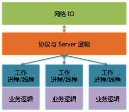
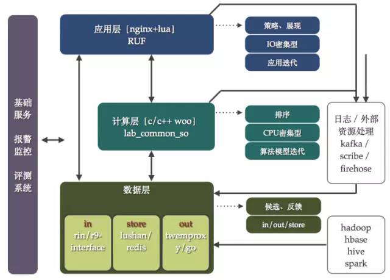

聊聊架构 合集
反思 | 你是个软件架构师吗？
开发和架构的界限难以捉摸。有些人告诉你它根本不存在，架构只是开发者们所做的设计过程的简单扩展。 另外一些人认为这是一个鸿沟，它只能由那些做到高度抽象，而且不会陷入实现细节的开发者才能跨越。通常，在这两个极端的观点中间某处有个可操作的平衡点；不论如何，怎么从开发转换为架构师都是个有趣的问题。
经常被用来区分软件架构和软件设计开发的关键几点包括 伸缩性和抽象程度的增加以及作出正确设计决策意义的增强。软件架构是通过一个全局的观点，宏观的视角来理解软件系统作为一个整体如何工作。
即使这能够帮助区分软件开发和架构，它并不能帮助理解某人如何从开发提升到架构。 并且，它也不能帮助识别谁能够成为一个好的软件架构师，如果你想雇人的话你如何去寻找他们以及你是否是一个软件架构师。
经验可以判定但你需要更深入地了解
要成为一个软件架构师并不是一夜之间或者一个职位的提升就能简单达到的。 这是个职责，而不是头衔。这是个进化的过程，你将会逐步得到担当这个职责所需的经验和信心。
当你寻找架构师时，需要考虑各方面的素质，他们过去的经验往往是他们有能力担当这个职责很好的判断。由于软件架构师的职责是多种多样的，所以你需要再深入了解他们在不同领域的参与度，影响力，领导力和责任感。一般来说，在大多数项目中软件架构可分为两个阶段，架构的定义，然后是它的交付。
软件架构的定义
架构的定义过程看起来非常简单明了。 你需要做的是理解需求并设计一个系统来满足需求。 但实际上并没有那么简单，根据你不同的做法，软件架构的职责之间差距很大，以及如何认真看待自己的职责而定。如下图所示，这个职责的架构定义部分，可以进一步细分成不同的元素。
管理非功能性需求：软件项目经常陷入问用户要求是什么，什么是他们想要的功能，但很少问他们需要什么非功能性需求（或系统质量）有时候，干系人会告诉我们，“这个系统必须很快”，但是这太主观了。非功能性需求如果要满足的话需要明确，可度量，可获得以及可测试。大多数非功能性需求本质上是技术层面的而且经常对软件架构有很大的影响。理解非功能性要求是架构师职责非常重要的一个部分，但假设这些需求是什么并不一定是对他们的挑战。你见过多少系统真正需要24×7的运行呢？
架构定义：捕捉到了非功能性需求后，下一步是开始思考你打算如何去解决干系人提出的这些问题并定义它的架构。 公平的说每个软件系统都有一个架构，但并不是每个软件系统都有一个定义好的架构。这正是问题的关键。架构定义过程让你想清楚你打算怎么在兼顾需求和限制的情况下把问题解决好。架构定义是将结构，方针，原则和领导力引入软件项目的技术层面。定义架构是作为软件架构师的工作，但是从头开始设计一个软件系统和对已存在的系统扩展是相当不同的。
技术选型：技术选型通常是一个有趣的练习，但它也有公平的挑战,因为你需要综合考虑成本、许可、供应商关系、技术策略、兼容性、协作性、支持、部署、升级的政策以及最终用户环境等各方面。综合这些因素，通常会导致简单选择类似富客户端技术而进入了完全的噩梦。接下来的问题就是这些技术是否能真正有用。技术选型是彻头彻尾的风险管理；复杂性或不确定性太高的时候要减轻风险，当有机会或利益的时候要引入风险。技术决策需要考虑多种因素，而且所有的技术决策需要被检查和评估。这包含软件项目的主要组成部分乃至开发中引入的类库和框架。如果定义一个架构，你还需要有信心认为选择这项技术是正确的。同样在技术评估中也还是存在开发新系统和向现有的系统增加新技术的不同点。

架构评估：如果你设计软件，你需要问问自己你的架构是否有用。 对我来说，一个架构是成功的，如果它满足非功能性需求，而且为其他部分的代码提供必要的基础，并为解决和存在的业务问题提供足够的平台。软件的一个最大的问题就是它复杂而抽象，导致很难从UML图或代码本身去设想出运行时的特性。在软件开发周期中我们进行了很多不同类型的测试，这样我们能够有信心我们发布的系统在推出时能够正常运行。我们为什么不对架构也这样做呢？ 如果能够测试你的架构，那你就可以证明它是有效的。如果你能尽早做到这一点，你就能减少项目失败的风险，而不是简单地希望一切都好。
架构协作：任何一个软件都不是与世隔绝的，需要很多人理解它。 包括从需要理解和切入架构的直接开发团队到其他对安全性、数据库、运营、维护、支持等有兴趣的干系人。要想让一个软件项目成功，你需要和所有的系统干系人紧密协作来保证架构和所在的环境很好的集成。不幸的是，现状是与开发团队的架构协作很少发生，更不要说外部干系人了。

软件架构的发布
对于架构的发布也是同样，对于成功的软件项目参与程度的不同，也决定了软件架构职责的不同。
拥有全局的视角：为了把一个架构成功地实现，我们需要具有全局的视角并把贯穿软件开发生命周期的愿景加以宣传与推广，必要的话在整个项目中展开和完善，并对成功发布负责。如果如果你定义了一个架构，参与并保持不断发展的架构才是有意义的，而不是选择把它传递给一个“执行小组”。
领导力：拥有全局的视角是技术领导的一个方面，但是还有其他事情在软件项目发布阶段需要做。 这包括承担责任、提供技术指导、作出技术决策以及具有权力作出这些决定。作为架构师，你需要进行技术领导来确保每件事都被考虑到，而且团队在朝着正确的方向持续前进。软件架构师职位是需要内在领导力的，虽然这听起来很明显，但很多项目团队并没有获得他们所需要的技术领导，因为架构师认为一个成功的发布并不一定是他们所关注的问题。
教练和指导：在大多数软件开发项目中，教练和指导经常不被重视，团队成员得不到他们需要的支持。 虽然技术领导是引导整个项目，但个人也经常需要帮助。除此以外，教练和指导提供了一个强化技能的方式，并帮助提升职业生涯。这应该是软件架构师份内的事，而且指导团队架构和设计与帮他们解决代码问题是截然不同的。
质量保证：即使是世界上最好的架构和领导，很糟糕的交付也足以让一个具备其他成功条件的项目失败。质量保证在架构师职责中占很大一部分，但这并不只是简单做代码检查。 比如，你需要一个基线来确保，这意味着引入新的标准和工作实践。从一个软件开发的角度来说，这可能包括代码标准、设计原则和源码分析工具甚至于使用持续集成,自动化单元测试以及代码覆盖工具。可以说大多数项目质量保证做的并不够，所以你需要搞清楚什么是重要的并给予它足够的保证。对于我来说，一个项目的重要部分包括架构上的重点，关键、复杂或高度可见的业务。你要关注实效并认识到你并不能保证一切，要知道做总比不做好。
设计、开发和测试：软件架构师的职责范围的最后一件事是设计、开发和测试。作为一个实际动手的架构师并不是需要你每天都要写代码，但是它的确意味着你一直在参与项目，而且积极帮助打造和交付它。说了这么多，为什么每天写代码不应该成为一个架构师职责的一部分呢？大多数架构师都有写代码的经验，因此让这些技能保鲜是有意义的。而且，架构师能体会到团队里其他人的痛苦和感受，这样能让他们更好地理解他们的架构从开发角度看是什么样的。很多公司有政策阻止软件架构师从事写代码，因为架构师“去做那些廉价的工作太贵了” ，这显然是个错误的态度…如果架构师已经花了那么多时间精力为项目做架构，何必从政策上不允许他们多走一步来帮助项目达到最终的成功呢？当然，有些情况下卷入代码级别并不现实。比如，一个大的项目通常意味有一个更大的“全局观” 来考虑它，而且可能有时候你就是没有时间。但一般来说，一个写代码的架构师比只在旁边观望要更高效和快乐。

你是一个软件架构师吗？
不管你认为软件开发和架构之间的界限只是一个幻觉还是个巨大的鸿沟，以上强调了人们对整个软件架构中的经验水平往往有很大的差别，而这取决于他们怎么样工作以及他们如何认真地看待他们的职责。大多数开发人员不是在某一个星期一的早晨醒来就宣布自己成为一个软件架构师的。我当然也不是，我成为软件架构师的路线是一个渐进的过程。话虽如此，但很可能同样那些开发者已经做了一部分架构的工作，不论他们的职位名称是什么。
为软件系统的架构作出贡献和自己负责定义它有很大的区别，拥有持续的、跨不同领域的技能、知识和经验构成了软件架构的职责。跨越软件开发者和架构师的界限取决于你自己，但是首先你要明白你的经验水平，才能开始架构师之旅的第一站。
实时股票分析系统的架构与算法
虽然股票交易市场一直在持续地变化，经济力量、新产品、竞争、全球性的事件、法规、甚至是Tweet都有可能引起市场的变动，但是在这个市场上，使用不同的模型通过股票的历史价格来预测未来的价格依然是一种常见的实践。一个实时的股票分析系统不仅需要将影响股票价格的各种数据集合起来进行分析，还需要具有响应低延迟的特性，因而架构必须是高可伸缩、高扩展的，一方面随着时间的流逝，系统将存储越来越多的数据；另一方面数据处理应用程序必须能够通过添加更多的节点进行水平扩展以保持实时地响应速度。
来自于Pivotal公司的企业应用解决方案架构师William Markito最近在公司的博客上发表了题为《实时股票预测系统开源参考架构》的文章，介绍了一个通过开源技术实现实时股票分析系统的参考架构。虽然该架构关注于金融交易，但是也适用于其他行业的实时用例场景。William Markito首先从最顶层的视角，给出了一个高层架构图：
从最顶层的视角看，由预测模型驱动的最优化实时股票预测架构包含数据存储、模型训练、实时评估和采取行动四部分：首先，进入系统的实时交易数据必须被捕获并存储，作为历史数据。第二，系统必须能从数据的历史趋势中学习，识别出影响决定的模式和概率。第三，系统需要能够实时地将新传入的交易数据与从历史数据中学到的模式和概率进行比较。最后，系统还需要预测出输出并决定所要采取的行动。
之后，William Markito又使用Spring XD （现在称为Spring Cloud Data Flow，是一个统一并且可扩展的分布式系统，可用于数据抽取、实时分析、批量处理和数据导出场景）、Apache Geode （一个针对高可扩展应用程序的开源分布式内存数据库，目前正在孵化中）、Spark MLlib 、Apache HAWQ （一个Hadoop原生的大规模并行SQL分析引擎）以及Apache Hadoop™等开源组件对架构中的每一部分进行了细化：
如图所示，整个数据流包含6步，每一部分都是松耦合并且可以水平扩展的：
- 使用Spring XD读取并处理通过Yahoo! 金融Web服务API获取到的实时数据，然后通过Apache Geode 将数据存储在内存中。
- 使用 Apache Geode中的实时热数据，通过Spark MLib应用创建并训练模型，将新数据与历史模式进行比较。当然，也可以使用其他工具集创建模型，例如 Apache MADlib或者R。
- 将训练出的机器学习模型推送到部署好的应用程序上，同时更新 Apache Geode以便于进行实时预测和决策。
- 随着时间的推移，有一部分数据将变成冷数据，将这一部分数据从 Apache Geode移动到Apache HAWQ上并最终存储到Apache Hadoop™中。
- 周期性地基于整个历史数据集重新训练并更新机器学习模型。这一步让系统形成了一个闭环，当历史模式发生变化或者新的模式出现的时候，它会持续地更新和提升模型。
为了让读者能够在自己的笔记本上运行这一架构，William Markito还给出了一个更为简化的实现，该版本移除了长期的数据存储组件Apache HAWQ和Apache Hadoop™。
该解决方案中的每一个组件都责任明确，支持扩展并且能够在云环境中运行。那么除了架构之外，针对影响股票价格的不同因素，应该选择哪些算法来训练模型并预测股票价格趋势呢？
在SlideShare上LargitData的CEO David Chiu介绍了如何通过隐马尔科夫模型（HMM）来预测股票价格，David Chiu认为股票的历史行为与当前行为具有一定的相似性，明天的股票价格可能会遵循过去的某种模式
另外，在Vatsal H. Shah 的网站上还有一个文档介绍了Decision Stump 算法、线性回归、支持向量机、Boosting 算法和基于文本分析的方法在股票预测领域的应用，并对这些算法的预测结果进行了比较。
除此之外，与上市公司相关的新闻动态也会对股票价格造成影响，例如并购定增事项、公司领导人的离开等等，对于这一问题，新加坡的数据科学家Lim Zhi Yuan在SlideShare上分享了一些自己的经验。Lim Zhi Yuan在该分享中研究了外部事件对于股票价格的影响，在分析时他分别通过线性模型和非线性模型两种方法进行了实验，线性模型采用了支持向量机（SVM）算法，非线性模型采用了深度神经网络模型。
研究Airbnb架构，我学到了什么？
Airbnb成立于2008年8月，总部位于加利福尼亚州旧金山市。Airbnb是一个值得信赖的社区型市场，在这里人们可以通过网站、手机或平板电脑发布、发掘和预订世界各地的独特房源，其业务已经覆盖190个国家的40000座城市。目前，Airbnb已经完成了7轮融资，共募集了23亿美元的资金，估值达250亿美元。Mike Curtis是Airbnb工程部门的副总裁。近日，The Platform编辑Timothy Prickett Morgan就Airbnb的架构要点对他进行了采访报道。
Airbnb自成立之初就部署在AWS上，Curtis认为：
这很重要，我们的工程师可以尽可能地专注于让我们与众不同的东西上，而不用运行一个庞大的基础设施。
目前，Airbnb已经使用了大约5000个AWS EC2实例，其中大约1500个实例用于部署其应用程序中面向Web的部分，其余的3500个实例用于各种分析和机器学习算法。而且，随着Airbnb的发展，相比于业务处理所需的计算能力，分析和机器学习的计算能力需求增长更快。这是因为，随着Airbnb的用户越来越多，其挑战不是找到一个可供出租的地方，而是找到一个合适的地方，并且让房主和房客都满意。按照Curtis的说法：
我们在工程上所做的一切工作都是为了在人与人之间创建良好的匹配关系。每个旅行者或房主的情况都不相同。人们都有不同的偏好，希望获得的旅行体验就有所不同。因此，我们在工程上所做的大量工作都是关于，如何为了真实世界的线下体验将合适的人匹配在一起。这是我们所做的一切工作的组成部分，其中包括机器学习、搜索排序、欺诈检测……
关键就是，根据房客和房主的偏好（个人资料及在Airbnb上的交易和搜索历史），使用搜索引擎和机器学习，找出最好的租房/出租选择。而且，选项不能太多，否则用户会很难决定。因此，Airbnb需要借助机器学习强化搜索，为用户（房客和房主）提供5到10个选项。这缩短了交易时间，降低了Airbnb系统的负载，而用户也更满意。
同许多公司一样，Airbnb开始时也使用了若干开源软件，但进行了大量的修改和扩展，以便创建一个机器学习强化的搜索引擎。其核心索引技术使用了Lucene，但只用了反向文本部分。而所有的排序和机器学习功能则是他们自己编写的。他们的第一个机器学习实验就将预订率提升了4%。Airbnb的动态定价也是由机器学习算法所支撑。据Curtis说，当房主按照Airbnb推荐的价格上下浮动不超过5%定价，其出租成功率提升了4倍。
为了使机器学习更容易嵌入应用程序，Airbnb创建了一个名为Aerosolve的工具（阅读原文中）。该工具有许多功能，但最重要的是让数据科学家可以了解机器学习算法（房屋推荐或定价建议）内部正在执行什么操作，然后运用直觉获得更好的结果。
驱动Airbnb站点和分析的核心数据平台是Hadoop，所有东西都存储在Hadoop分布式文件系统中。之前，他们使用Amazon Elastic MapReduce服务，并在AWS EC2计算实例上部署了自己的Hadoop，但去年，他们已经迁移到Cloudera的企业级Hadoop上。此外，Airbnb使用S3存储Web站点的图片和Hadoop集群的备份数据。
在HDFS文件之上，Airbnb使用由Facebook创建并开源的Hive和Presto创建了一个数据仓库。对于长时间运行的查询，他们使用MapReduce。Hive不支持子查询，使用MapReduce可以获得同子查询类似的结果。Curtis指出，Presto非常强大，它兼容SQL，使得数据查询非常容易，而且速度很快，虽然功能不如Hadoop MapReduce或Hive多，但在日常分析中非常有用。他们还创建了一个名为Airpal的工具（GitHub页面），用于设计SQL查询，并发送到数据仓库的Presto层。
Curtis告诉The Platform：
实际上，去年年底，我们做了一次很大的集群迁移，将所有的数据基础设施分成了两个单独的镜像集群：一个用于运行所有关键的业务任务……另一个用于即时查询……
这两个Hadoop集群使用Kafka保持同步。Airbnb创建有自己的工作流和ETL工具Airflow（GitHub页面）。该工具已经钩入HDFS、Hive、Presto、S3、MySQL和Postgres。此外，Airflow接收来自Airbnb站点的非结构化数据流，增加结构后转储到HDFS上的Hive表中。曾经很长一段时间，他们使用成百上千的CRON任务来做这项工作，那很容出问题。而Airflow提供了一种简洁、可编程的系统，使他们能够查看、编辑、监控和调试ETL系统。
为了管理AWS上的集群，他们使用Chef进行配置管理，并自己开发了很多工具。虽然Mesos集群控制器已经被前Twitter和Airbnb工程师商业化，但他们现在使用Mesos并不多， 因为他们觉得：
本质上讲，Mesos是一个抽象层。其设计初衷是让很多节点看起来像一个节点。我们发现，尤其是在Mesos上运行某些新东西时，这个抽象层实际上会隐藏一些东西，增加了我们调试的难度。
最后，Curtis指出，虽然他们无意运行自己的数据中心，但IT团队每隔六个月就会对计算和存储能力及成本进行分析，然后与创建并运营本地数据中心进行对比。他们发现，租用AWS的服务可以节省20%到30%的费用。而按Curtis的说法，实际节省的费用可能更多，而且，在数据中心投入过多的精力就无法专注于业务了。
五年Skype架构师之路的感言
作为架构师和设计者，我们常把手头的事情作为工作焦点，很少反思过去如何。我们应该温故而知新。我从作为skype架构组领导的55 个月经历中总结了6个经验。其中一些是技术性的，另外一些是架构师较为软性的观点。首先介绍一下Skype的背景资料。
Skype背景
Skype是让用户可以进行音频视频通话的软件，也可以拨打普通电话以及发送短消息。公司成立于2003年，从成立以后就有令人难以置信的成长曲线。公司现在有超过五亿两千万注册用户，大约650名员工。这些用户同时产生平均21万个通话，其中大约三分之一包含视频。这个数字大致上是全世界国际通话的 8%。
不用多加说明也能知道，这个通讯量产生了罕见的扩展性挑战。在Skype一直使用端对端（peer to peer）技术作为处理类似挑战的主要武器。对等网络（核心用C语言实现）主要是由C++编写的服务器端服务及Postgre数据库支持组成，并结合强大的Python脚本。Web服务使用PHP搭建。
技术方面
经验法则不适用
在作为软件工程师的职业生涯中，一些模式会慢慢浮现出来，一些经验规则会显现出来。显然，你愿意无论何时何地都一直使用这些规则。毕竟它们过去都很有效，是不是？
事实证明，即使你有好用的锤子，也不要把身边所有东西都当成钉子。在快速变更的现代科技社会，经验法则不会一直适用。例如，我们看看Skype数据库是如何架构的。
传统智慧说永远不要在数据库里面实现业务逻辑。为何这个说法传播如此广泛？大多数架构师都有类似经验，这会导致原始数据库在硬件方面如巨兽般增长，无法运行，也非常难维护。
这个假冒克苏鲁恐怖神出现的原因是主要数据库平台常常缺乏两个重要而且立等可用的特性：横向划分数据库的能力（比如根据数据实体划分数据）和纵向划分数据库的能力（不同的数据库实体放入不同数据库中）。当然，我们可以自己建立这两种特性，但是数据库管理团队以外的人常常也想处理类似问题。对于DBA来说这是赖以生存的手段而不是用于解决问题的能力。也就是说，对数据库做划分或者队列的技术常常要存在于数据库之外，使得开发者需要自己处理协议转换、多种接口、数据集成等问题。
在Skype，维护数据库的这些人恰巧也是Postgre的重要贡献者。从很早开始他们就拒绝把数据库看成是系统架构角落一个大而无当的罐子，反而以积极地态度去学习技术，解决他们遇到的扩展性、性能及可维护性方面的问题。像你猜想的一样，这些还不够，即使最好的数据库架构也会在轻率地编码中被废掉。幸运的是，Skype数据库管理员从很早开始就掌控了需要进入数据库层的开发工作，在执行了一系列非功能需求、代码实现、同事评审过程来确保实现代码适合数据库层以及其他相关部分的设计之前，Skype的DBA不放弃控制。
图一解释了他们如何使用这些工具建立Skype数据库架构。
这里由四层构成：
- 接入层提供了接入数据库的能力，而且也处理数据库分区问题（pIProxy）和连接池（pgBouncer）。并且让开发者可以透明的使用这些功能。
- 联机事务处理层，是OLTP数据库存在的地方。
- 队列层，负责层与层之间数据库传送数据和复制数据。
- 内部服务器层，包含了用于记录、统计、检视、批处理和ETL目的的数据库。
所有这些都是为了保证数据库可扩展性对于开发者不是问题。我们把必要的业务逻辑尽量贴近数据，让它最有效的工作，也就是”业务逻辑应该远离数据库”的经验法则并不适用。当然会有类似发布、调试以及单元测试之类的困难，但是我们不害怕原始数据库肆虐发威。
图一：数据库层
架构模式也是一样。在工程师之间建立通用技术词汇表、提供验证过的常见技术问题处方是非常重要的事，应该小心对待。Skype的端到端网络就是很好的例子。如果问题以“设计互联网电话”这种方式提出，多数情况下，人们会设计使用SIP来实现要求。但是如果Skype通过基于SIP实现服务就不会给通讯工业带来变化。Skype早期的工程师不愿把自己限制于这件事通常如何完成，而是找到他们能建立的最佳可能方案。
总之，略微不同的组织和技能，就可能有必要建立完全不同的架构模式的应用。你应该随时欢迎这些差异对自己的传统思维挑战。
忽视功能架构吃尽苦头
我们很少有机会在项目初期搭建阶段就作为首席设计师参与工作。大多数工作是修改已有的系统，变更管理就成为架构师工作中很重要的部分。现在我们大多数变更管理关注在技术架构和有效地设计系统，以确保在实现变化以后设计依然有意义。
可惜是这不是故事的全部。
所有技术变化来源于功能上的变化。我们很少仅仅为了重构而修改系统。通常情况下会有一些外部驱动力，需要系统在某些行为上表现得不一样。这可能是市场上有 了新产品，也可能是法律变更或者是运营部门的人需要更好的扩展。无论如何，技术变更常常伴随着功能上的变化。
所以我们的系统和流程需要保证技术变化更容易，我们也希望这个管理过程比较有序，对于接手的人来说不是象意大利面条一样杂乱。可是什么是功能性变化？谁来关注系统的功能性以及确保变化不会让系统更混乱？
我用例子来说明一下。
在过去四年一直常常有人强烈要求我修改Skype的网络存储架构，即使我证明每个微小的变化都会伴随痛苦。在互联网上销售四个产品不是什么复杂的事情，大多数时间整个系统就是照常运行，即使有一些问题被发现，紧接着就解决了。
这就是原因。
图2展示所有Skype网络存储的功能组件。大约有200个。图表不是很清晰准确，只想展示整个应用系统的功能性和复杂度。这是不计其数的变化、添加、修改、法律问题、微调造成的结果。所有这些当然是都有事出有因和有价值的。
相当多的架构师没有仔细考量技术变化，结果导致意大利面条般的混乱，应用系统因为不加思考的变化在功能上变得混乱。这不意味着作为软件架构师，我有意从开始就阻止这些问题。但是如果不对系统功能性架构足够小心，就会导致功能架构的支离破碎。结果只能是凌乱的技术架构。
图2：网络存储功能架构
总而言之，应该时刻对你要维护的系统功能保持关注。修改技术架构，也要经常维护功能架构。
简单的事情有效果
简单说，任何需要超过三句话来解释给其他人的事情，都不会实际有效的工作。这就是为何REST可以实际应用而SOAP则做不到，也是为什么人们更喜欢Hibernate而不喜欢J2EE bean的原因。
PgQ[1]就是稍微简化需求会产生挺好结果的例子。对于所有消息系统来说，消息可靠性是主要性能问题之一。为不同客户端标记消息是”已使用“是很让人头 疼的，需要存储这些消息而且保证它们不会阻塞还未消费的数据存储。可是当承诺每个消息至少分发一次而不是仅仅一次，这些头疼消失了一大半。这对大多数情况下的客户端应用是可以接受的，只要允许它们自由实现自己需要的校验机制。
简单解决方案的另一个效果是促使你思考，而多思多想总是好的。设计有界面的WSDL是很有趣，但是有多大程度真正关注本质问题，比如在哪些类型哪些对象应该进入其他对象以及你希望是什么样子的？就是如此。
总之，朝着让系统应用更为简单的目标去迎接所有需求、定律以及标准，毫不留情的去掉所有导致系统缓慢的多余脂肪。
非技术角度
危险的流行语
时常会有些人以这样一种“很不错”的方式构建软件：发明一个吸引人的名字，在大家知道底细之前，在PowerPoint上到处描画这个名字。不幸的是，大多数这些想法都非常复杂，很少有实用性。比如J2EE、CORBA、SOA，都不是为了解决日常问题而设计的，它们有时候能起作用，但那是很偶然的。
在Skype，我们曾经多次出现类似问题，也相当成功地处理了它们。尽管我们听说某个组织有非常不同的经历。在某些时候，我们看到不少大型应用开发商最近发现它们的整个工程管理系统被替代了。
某个专家说了这个故事。
管理高层在表面上有一些时间需要处理特定的问题，比如听从某些咨询师告诉他们的建议，定制主要产品和全面进入云计算以及SOA这些决策会帮助他们。所以他们开始跟工程领导者谈话，尽管后者报之以空洞的眼神。就跟呆波特四格漫画画出来的一样，这些不过就是一大泡骗人的万灵油。过了一阵，不可避免的事情发生了，管理层厌倦了像是傻瓜一样被蒙骗（咨询师收费是很昂贵的），当下一步都开始了，还是没人去解决开始时的问题。即使摆脱了那些不胜任且总唱反调的人，这个公司也可能无法恢复元气。
这是架构师的失败，真的。
这个故事展现了架构师责任的二元性：首先是我们需要仔细考虑这些想法，只把实际上有意义的东西放入系统，让系统继续运行。另一方面，我们不能忽略这些常常是无意义的术语，因为真实问题可能就隐藏在后面。不容易找到根源问题的原因是客户的管理层缺少一些我们能理解的词汇来表达需求。另外，当某个概念跳出来，就好像已经解决了困扰客户很久的问题。他们捡起这根绳子就变得自以为有力量，从而在组织里面大肆使用它。从技术角度 回应这些情况（比如宣称整个事情是假的）不能解决运行中碰到的根本问题，也很没有建设性。当领导发现组织有问题并且相信他找到了解决方案，而你拒绝实现这个方案甚至拒绝讨论，你也就出局了。如果你自己不让这些流行语变得有意义，就会有一堆顾问没完没了帮你定义它们。
总而言之，用户很少有意糊弄你，你也不应该糊弄用户。你应该跟用户一起找到并解决真正的问题。因为信赖你，你的总裁会有更好的事情去做，而不是丢一些听了让人发抖的无意义的广告词给你。
架构师需要配合你的组织
大多数人每天工作是为了把事情尽可能做到最好。架构师则是为了建立可无限扩展及模块化的伟大系统架构而工作。
实际这不是付钱让我们做的事情。
每个系统都存在特定的上下文环境。这个环境包括已有技术系统，也包括技能、态度和人们处理问题的企业文化。甚至更为重要的是，所有系统存在于特定商业环境 中。初创企业与巨型电信运营商是不一样的，银行与政府机关是不一样的。很显然，没有一个好的或优美的架构能适合不同商业和组织结构的变化。架构需要适应组织，帮助他们达到目标（或者没有达到）。这往往意味着需要压抑自己建立优美系统的渴望，因为通常情况下你所认为优美的系统和组织需要是两回事。
现实就是，把技术负债[2]的概念放在一边，不要带着债务去工作。可能技术上不十分先进，也没有非常完美，但是能很好帮助你的组织。
在Skype的环境中，这一直是个很重要的问题。我们大量用户使用的主要服务由对等网络提供。对等网络是非常漂亮的东西，但不一定是所谓的“干净 “或”简单“。对于拥有传统web应用背景的人来说端对端是非常可笑的。搭建、维护、调试、上线、测试和解释这事是比较困难的，特别是在这个量级上，我们是唯一运营对等网络的公司。而且，总有咨询师施加压力要我们回退到象其他人一样基于服务器的架构。
从技术角度来说，这个压力可以理解，而且有一堆原因说明做这种切换是合理的。当看到这个改变可能影响到我们的业务模型的时候，决定就变得困难。例如，我们的用户在视频通话流量上同YouTube的视频流量是同一数量级。由于使用了端对端架构，Skype并没有在硬件上大量投入。对端对端架构的更改很大几率上意味着免费视频电话服务的结束，也就意味着没有补贴费形式的商业模式的结束。因此，无论我如何考量和是否喜欢使用端对端架构，它都会在比较中占上风。
总之，所有你架构方面的决定都需要根据组织所处环境而不是个人喜好来制定。
沟通很重要
我们前面看到过，如何制定架构需要根据业务功能而定。因为系统架构正确与否决定了业务功能正确与否，很合理的得出结论：人们对系统架构很感兴趣，是因为商业利益的缘故。但是系着粉丝巾的市民如何了解开发者发现的错综复杂的系统，以及软件工程师如何能找到业务功能？
答案极为简单，就是沟通。两方面都需要伸手跨过文化阻隔开始交谈。架构师的工作是把业务策略翻译成技术。这正意味着沟通。
这非常不容易，要知道获得管理层的尊重是很困难的。但是如果没有彼此尊重和沟通，工程师只能忍受武断的技术决定，业务也不得不同限制其发展的系统打交道。如果没有沟通，也就没有理解，更谈不上合作。
图三：架构师组织
沟通对于架构的另一个很明显用户，也就是开发者也是很重要的。如果没有开发者尽善尽美的实现，架构就不能变成服务用户的实际代码，也就无法为业务产生价值。再重复一次，信任与互相尊重是很关键的。
图三展示了skype架构师的一般组织图，没有必须的团队或者汇报层次界定，就是非常简单的关联模型。中心部分是架构师组，主要维护关系和制定通用方向。 业务部门架构师（称为解决方案架构师，非常类似分析师的角色）和开发组架构师（称为技术架构师）对他们作补充。前者负责帮助业务部门把想法整理成为技术可 行的形式，以及提供解释技术合理与否的反馈。后者负责监督开发及细化架构师提供的高层设计。
这个架构师组织在不同利益关系方提供了足够的组织结构和协调，同时还有一定的自由度。当然，你需要找到适合你们组织的模型，无论解决方案如何，都需要促进你的架构师与重要客户之间的沟通。
总而言之，与人交流！
结论
无论你过去工作如何，比如为Facebook或者Skype这样的巨头工作，或者曾经跟你本地的CIO社区聊过天，应该只作为帮助你们组织找到解决方案的起点，不多，也不少。
技术技能是架构师的必备条件。你需要有技术技能来获取这个职位，但是情商和理解组织业务的能力才定义了你有多优秀。
为什么企业架构如此重要？
保持业务与IT对齐是今天所有组织面临的一项基本挑战。本文将与您一起探讨企业架构（Enterprise Architecture，EA）对业务的重要性。
什么是业务？
商业企业，无论是公有还是私营，都是按着自己的愿景来满足他人的需求的。随着业务增长，企业通常需要追加投资，如此一来，企业可能会通过上市或利益相关者获得发展资金。某些时候，业务是通过组织体系进行交付的。这些组织会以契约方式与供应商或者与一个或多个有关各方或合作伙伴形成建立关系。
无论是否正式定义，愿景决定着当前的业务目标和远期战略。通常，目标会细分成多个短期的战术目的，不同的施动者（即雇员或服务提供商）会对这些目的负责。这些目的应共同促进与之关联的目标的实现。定义了目标和目的之后，需要通过事先定义的指标如关键绩效指标（key performance indicator，KPI）对其进行跟踪和监控。
不可避免的是，会存在某些外部的市场驱动力，它们对目标和目的会产生直接影响。随着时间推移，这些外部驱动力会促使企业改变最初的愿景和业务方向。驱动力可以来自外部如竞争对手服务或产品的价格或差异化特性，或者来自特定区域的法律法规约束，又或者来自企业内部如盈利目标或削减成本的需要。
业务经营会受制于特定的外部约束，如严密定义的监管环境或贸易限制。这些外部约束会阻止组织采用特定方法实现其目标。
业务会为市场形成各种产品，如汽车或消费品，还会提供某些业务服务，如薪资管理服务或设备维护服务等。这些产品和服务时根据适当的标准或指引进行制造或交付的。
业务是一种组织。通常，组织通过与内部施动者订立契约（组织员工或服务提供商）来与其他施动者一起实施各种功能。施动者会被赋予各种预先定义的组织角色，担负特定的职责并具有特定的技能，如具有簿记技能的财务会计。通常，业务的组织施动者是围绕业务功能进行安排的，并由第三方供应商对这些功能提供支持。在该情景中，某项功能的运作是通过一组流程来进行描述的。与此同时，企业会在不同的地理位置建立各种组织单元及其各自的施动者。
这些概念形成了业务经营的战略上下文，也是业务架构的重要组成部分。
尽管，功能也与业务架构相对应，但业务的功能是通过施动者执行一个或多个流程实现的。流程显示了功能之间的流向或某个流程的运作。一个流程可以分解成多个触发或导致的事件、业务输出或流程产品、执行的各种控件或决策步骤、以及执行流程所需的各种功能。
如果组织要想获得更高的效率和灵活性，可以将功能分解成预先定义的各种特定业务服务，如客户联系人管理或备件库存控制等。定义特定业务服务时，可以通过显式接口定义功能，并且该功能需要显式控件和治理。服务的粒度由组织的目的和关注决定。
业务怎样才能更高效？
提高业务效率的主要途径之一是利用IT实现某些关键业务流程自动化。并非组织的所有部分都需要实现自动化，而且并非可实现的自动化都符合需要。关键是确保组织业务架构与其自动化架构对齐。这样，就实现了投资回报最大化。
组织可以选择利用信息系统实现某个现有业务服务自动化。在此情形下，该业务服务就会对一个或多个应用功能单元（即信息系统服务）产生依赖。
为了交付其成果，业务服务会提供或使用信息。信息可以分解成特定的逻辑信息构件，如产品配置或客户详细信息等。信息构件可以进一步分解成独立的数据实体，如客户和联系人。
物理信息构件被表示成与其他数据存储库，它们驻留在计算机化的数据存储库中，各自发挥着特定的作用，并由施动者负责填写。
在应用架构中，代表已部署且发挥作用的IT系统的应用构件组合支持着信息系统服务。为了应对技术复杂性，应用构件通常以提供各种特性的逻辑应用构件的形式进行封装，如库存控制系统或物理部署的物理应用构件。物理应用构件可以是粒度很粗的应用，如部署的ERP系统实例乃至部署的细粒度的（面向Web的）企业服务，它们部署在计算机上。
应用构件与其他构件通过接口连接，对信息构件的数据存储库进行维护，对数据实体进行封装，由服务业务组织单元和施动者使用，并通过通讯网络提供。
集成需求由组织的经营模式决定，它显示了跨业务领域的业务流程（数据共享）集成的业务需求。
自动化系统之间怎样互相联系？
从技术上讲，构成服务的应用构件通过技术构件交付，或通过运行在（由计算机和网络构成的）平台上的IT产品获得。
鉴于技术构件通常都是通用的并且可以从市场购得，为了直接实现业务功能自动化，需要根据特定组织对应用构件进行配置和部署。
一系列复杂的可用技术构件可以分成各种逻辑技术构件或类，如数据库、操作系统和网络等。然后，通过最合适的物理技术构件，如SAP Netweaver应用平台、Oracle数据库或UNIX操作系统等实现它们。这些构件部署在特定的地理位置（如仓库、数据中心或办公场所等）。
如果业务选择以信息系统服务形式实现某项业务服务自动化，则需要通过某项技术平台服务启用该服务。平台服务要包括提供集中式备份恢复服务。
业务怎样与适当的自动化能力对齐？
由于业务变化和技术进步，组织很容易在功能自动化或技术使用上错误地花费大量时间和精力。
组织的愿景、目标、目的和指标会包含各种定义业务需要的显式或隐式需求。
这些需求往往建立在组织当前状态与目标状态之间差距的基础之上。一旦定义了这些需求，它们就会具有一整套相互依赖的工作包，如程序或项目。这些工作包的目的是实现业务转型。
为了确保符合组织目标、目的、指标和需求，必须对这些工作包进行提炼，纳入业务需要或原则陈述当中，这样才能用于治理组织转型。为了对转型进行正式规划和有效设计及治理，可以用一套架构模型或架构构建块来描述组织的各个方面。
为什么需要企业架构？
组织需要企业架构有两个主要原因：
1.对企业生存和成功至关重要
有效的企业架构对企业生存和成功至关重要，使通过IT取得竞争优势不可或缺的手段。今天，CEO们已经认识到通过IT对信息进行有效管理和利用是企业成功的关键所在。企业架构恰恰解决了这一问题，它为企业IT系统演进提供了战略上下文，使企业能够应对不断变化的业务环境。
2.使企业创新得到管理
企业架构使您能够平衡IT效率与业务创新之间的关系，对创新进行管理。各业务单元可以踏踏实实地进行创新以获得自身竞争优势。同时，可以保证组织的全面IT战略需要，实现企业范围内最紧密的协作。
企业架构的收益
企业架构的收益可以分成如下几类：
- 业务收益，如帮助实现业务战略、加速新产品/服务上市、各业务单元的业务流程与信息保持更高的一致性、更高的可靠性和安全性、更低风险等。
- IT收益，更低的IT成本、更快的设计与开发、更低的复杂性、更低的IT风险等。
- 业务/IT收益，如更好地跟踪IT成本。
如何从零构建实时的个性化推荐系统？
现在网上到处都有推荐。亚马逊等主流电子商务网站根据它们的页面属性以各种形式向用户推荐产品。Mint.com之类的财务规划网站为用户提供很多建议，比如向用户推荐他们可能想要办理的信用卡，可以提供更好利率的银行。谷歌根据用户搜索历史记录的信息优化搜索结果，找到相关性更高的结果。
这些知名公司使用推荐提供情境化的、有相关性的用户体验，以提高转化率和用户满意度。这些建议原来一般由每天晚上、每周或每月生成新推荐的批处理作业计算提供。
然而对于某些类型的推荐，响应时间有必要比批量处理作业所需的时间更短，比如为消费者提供基于地理位置的推荐。比如电影推荐系统，若用户先前看过动作片，但现在要找一部喜剧片，批量推荐很可能会给出更多动作片，而不是最相关的喜剧片。本文将会介绍如何使用Kiji框架，它是一个用来构建大数据应用和实时推荐系统的开源框架。
Kiji，以实体为中心数据和360度视角
要构建实时推荐系统，首先需要一个能存储360视角客户的系统。此外，我们需要具备迅速获取与指定用户相关数据的能力，以便在用户与网站和移动应用交互时做出推荐。 Kiji是一个构建实时应用的模块化开源框架，它收集，存储和分析这类数据。
一般情况下，一个360度视图所需的数据可以被称为以实体为中心的数据。一个实体可以是任意数量的东西，比如客户、用户、帐户，或者POS系统或移动设备之类更抽象的东西。
一个以实体为中心的存储系统要能在一行数据中存储与某个特定实体有关的一切信息。这对传统的关系型数据库来说是个挑战，因为这些信息可能既有状态型数据（如姓名，电子邮件地址等）又有事件流（如点击）。传统的系统需要把这些数据存放在多张表中，处理时再把这些表联接起来，这使得它很难做到实时处理。为了解决这个问题，Kiji用了Apache HBase，它在四个维度 – 行、列族、列标识和时间戳-存储数据。借助时间戳维度和HBase存储多个版本Cell的能力，Kiji能够存储有更多状态的缓慢变化的事件流数据。
HBase是Apache Hadoop使用的一个键-值存储系统，它构建在HDFS之上，为大数据解决方案提供了必需的可扩展性。在HBase上开发应用程序面临的巨大挑战是，它要求所有进出系统的数据都是字节数组。为了解决这个问题，Kiji的最终核心组件是Apache Avro，被Kiji用来存储易于处理的数据类型，如标准字符串和整数，以及由用户定义的更复杂的数据类型。 读写数据时，Kiji为应用程序做必要的序列化和解序列化处理。
开发用在实时中的模型
Kiji为开发模型提供了两套API，Java和Scala，两套API都支持批量和实时组件。如此划分的目的是将模型执行划分为不同阶段。批量阶段是训练阶段，是一个典型的学习过程，在该过程中，将使用完整的数据集来训练模型。该阶段的输出可能是线性分类器的参数，或者聚类算法的群集位置，或在协同过滤系统中相互关联条目的相似性矩阵。实时阶段被称为评分阶段，取得经过训练的模型，并将它与实体数据相结合产生衍生信息。关键是这些衍生数据被当作一等公民，也就是说它可以存回到实体所在的行中，用于推荐，或作为后续计算的输入。
Java API被称为KijiMR， 而Scala API构成了KijiExpress工具的核心。 KijiExpress利用Scalding库提供API来构建复杂的MapReduce工作流，同时避免了大量Java冗余代码，以及串联MapReduce作业所必需的任务调度和协作。
个体与总体
之所以要划分出批量训练和实时评分两个阶段，是因为Kiji观察到总体趋势变化缓慢，而个体趋势的变化迅速。
比如一个包含上千万次购买记录的用户总体数据集。多一次购买不太可能对总体趋势的好恶造成重大影响。但对于一个只有10次购买记录的特定用户而言，第11次购买将对系统判断用户兴趣产生巨大影响。鉴于这种主张，应用程序只需在收集到足以影响总体趋势的数据时再重新训练它的模型。但对于特定用户而言，我们可以通过实时响应用户的行为来改善推荐的相关性。
实时给模型评分
为了做到实时评分，KijiScoring模块提供了一个惰性计算系统，应用程序可以只为经常与其交互的活跃用户生成最新推荐。通过惰性计算，Kiji应用程序不必为那些不经常光顾或再没回来过的用户生成推荐。这还有些额外的好处，Kiji可以在推荐时考虑像移动设备的位置之类的情境信息。
KijiScoring的主要组件叫Freshener。Freshener实际上是另外两个Kiji组件的组合：ScoringFunctions和FreshnessPolicies。正如前面提到的，一个模型包括训练和评分两个阶段。ScoringFunction是一段代码，描述了如何把经过训练的模型和单一实体的数据组合起来产生一个分数或建议。FreshnessPolicy定义数据变得陈旧或过时的时间。比如说，普通的FreshnessPolicy会指出超过一个小时后数据就过期了。更复杂的策略可能会在实体经历过一定次数的事件后将其标记为过期，比如点击或产品访问等事件。最后，ScoringFunction和FreshnessPolicy被附着在Kiji表中特定的列上，在必要时被触发来刷新数据。
进行实时评分的应用程序中包含一个服务器层，被称为KijiScoring服务器，它是负责刷新陈旧数据的执行层。当用户与应用程序交互时，请求将被传递到KijiScoring服务器层，它直接与HBase集群通信。KijiScoring服务器将会请求数据，并且在获取到数据后根据FreshnessPolicy检查数据是否是最新的。如果是最新的数据，它将其直接返回给客户端。如果是过时的数据， KijiScoring服务器将为发出请求的用户运行指定的ScoringFunction。你需要掌握的要点是它只为发出请求的用户刷新数据或推荐；而不是执行批处理操作，刷新所有用户的数据。这样Kiji就可以只是做那些有必要做的工作。数据刷新完成后会被返回给用户，同时写回HBase以备后用。
一个典型的Kiji应用程序将包括一定数量的KijiScoring服务器，它们是可以向外扩展的无状态Java进程，并能够运行使用单一实体的数据作为输入的ScoringFunction。Kiji应用程序通过KijiScoring服务器过滤客户端请求，由它决定数据是否是最新的。若有必要，它会在把所有推荐传回客户端之前运行ScoringFunction进行刷新，并将重算后的数据写到HBase中，以备后用。
将模型部署到生产系统中
能够轻松迭代其底层的预测模型是实时推荐系统的一个重要目标，避免因为要将新的或改进过的模型部署到生产环境而停掉应用程序。Kiji为此提供了Kiji模型库，它结合了描述模型以及用来训练模型和给模型评分的代码如何执行的元数据。KijiScoring服务器需要知道什么样的列访问会触发刷新，要用的FreshnessPolicy，以及将在用户数据上执行的ScoringFunction，以及所有经过训练的模型的位置，或给模型评分所必需的外部数据。元数据也存在一个Kiji系统表中，只是另一种最底层的HBase表。此外，模型库在受管的Maven库中为已注册的模型存储代码工件。KijiScoring服务器为新登记或未登记模型定期轮询模型库，按需加载或卸载代码。
整合到一起
使用协同过滤是一种非常常用的推荐提供方式。协同过滤算法通常会建立一个大型的相似矩阵，用来存放一个产品跟产品目录中其它产品的关联信息。矩阵中的每一行代表一个产品Pi，每一列代表另一种产品Pj。（Pi，Pj）中的值就是两个产品之间的相似度。
在Kiji中，相似矩阵是通过批量训练过程计算出来的，然后被存储在文件或Kiji表中。相似矩阵中的每一行都会被存放在Kiji产品表中某一行的单独列中。在实践中，这一列可能会变得非常大，因为其中放的是目录中所有产品的清单和相似性。通常情况下，批处理作业也会挑出相似度最高的条目存到表中。
相似矩阵在评分时是通过KeyValueStore API访问的，这个API可以访问外部数据。对于无法完全放在内存中的大型矩阵，可以把它们放在分布式的表中，这样应用程序可以只请求计算必需的数据，从而大幅降低对内存的需求。.
既然我们在评分阶段之前已经做了很多繁重的工作，那么评分自然成了一种相当简单的操作。如果我们想基于被查看的条目展示推荐信息，一个通用的评分函数只是从产品表中查找相关产品，并显示它们。
将该过程再推进一点并对结果做个性化处理是一个相对简单的任务。在个性化系统中，评分函数将会取得用户最近对产品的评级，并使用KeyValueStore API查找与用户评价过的产品相似的产品。结合评级和存储在产品表中的产品相似度，应用程序可以预测用户给相关条目下的评级，并将预测评级最高的产品推荐给用户。通过限制所用评级和所有已评级的相似产品的数量，系统在用户与应用程序进行交互时可以很轻松地处理上述操作。
结论
在本文中，我们可以了解到如何用Kiji开发一个可以实时刷新推荐的推荐系统。利用HBase进行低延迟处理，用Avro存储复杂的数据类型，使用MapReduce和Scalding处理数据，应用程序能够在实时情境中给用户提供相关推荐。
别炒概念了，咱认真思考下SOA与微服务到底有什么区别
在过去一年左右的时间里，我们看到有关微服务的文章与演讲不断涌现，其主题包括微服务的反模式、各种原则以及它与SOA之间的关联。最近，来自C2B2的顾问主管Matt Braiser也加入了微服务与SOA的关联这一话题的讨论之中。
最近，人们对于微服务的概念进行了大量的讨论，其中有许多讨论是关于微服务与SOA之间的关联。微服务究竟是压垮SOA的最后一根稻草，还是能够拯救整个软件工程行业的万能药？人们对此众说纷纭。
Matt在文中对于微服务概念产生背后的原因以及SOA的原则进行了一些基本的概括。这篇文章的基本思想是：这两种架构在原则上确实是相当近似的，但面向SOA或微服务进行架构的产品确实存在着各种不同之处，使得他们各自适用于不同的用例。Matt在对微服务的总体介绍中是这样说的：
经过分离的组件可以各自拥有独立的生命周期，并且按需进行扩展。不仅如此，这种方式也打破了组件之间的技术依赖，这就允许每个服务各自选择最适合的技术进行实现。通过将较大的问题分解为几个较小的问题，让每个问题更易于进行分析，也更利于开发者选择最适合的解决方案。
尽管有这些优点，但微服务也存在着一些不足之处。虽然在这一领域中具有实际工作经验的开发者基本上都已经很好地理解了这些问题，但针对他们的报道与讨论却相对很少：
通过这种方式对大问题进行分解也增加了整个解决方案的复杂度，尤其是在那些使用不同技术或方式创建各种服务的系统中体现得更为明显。这种架构将系统的整合点推移到了服务之间的接口，因此这些服务的接口需要进行良好的定义，在系统中也要对服务级别达成一致，并且还需要定义其他的非功能性需求。
在目前来看，微服务还是一种相对较新的技术，架构师与开发者们通常所使用的一些辅助性工具也还处于发展阶段，以上所提及的这些问题可能迟早会得到解决。但在Matt看来，微服务的应用还存在着一个关键问题，那就是数据的管理和所有权：
当某个原本采用一体性应用程序架构的系统被分解为多个小型服务时，在原本的一体性架构中集中保存在某处的数据，在新的微服务应用中经常会改为保存在多个地方，这种改变可能会带来维护数据一致性的挑战。
Matt指出，与微服务相关的产品通常会专注于服务组件的生命周期，鼓励开发者在实现服务时选择某些推荐的实现方式，例如Docker，并通过某些推荐的协议进行服务之间的交互，通常来说RESTful风格是一种自然的选择。
通常来说，RESTful服务最适合于为某个数据模型提供CRUD操作，而微服务架构中的服务往往能够被轻易地分解为这些CRUD类型的服务，因此它与RESTful就能够很好地结合在一起。而对于其他类型的服务来说，类RESTful风格的服务通常也是一种良好的选择，这种类RESTful的风格也会使用HTTP作为传输协议，但服务本身并不一定要100%地符合RESTful的原则。
在Matt在文中提到SOA之后，他很快深入地谈论了SOA与微服务之间的关联：
现如今，谈论SOA的各种不足似乎已经成为了一件很普遍的事。但如果你认真地观察，就会发现SOA的缺陷中的绝大部分与微服务是相同的，只是有关他们的案例更为具体一些。而两者的优势其实也大体相同，因为从本质上看，这两种技术所做的都是同一件事：将一个较大的问题分解为多个较小的问题。
随后，Matt进一步指出，那些通常被认为在实施或推广微服务方面具有领袖地位的公司，往往也乐于将他们的架构描述为面向服务的架构。不过，为了实现目标，这些公司通常会倾向于避免使用传统的SOA产品。按照Matt的观点来看，这些产品就是指专注于基于企业服务总线（ESB）的方案。但在Matt看来，之所以这些SOA产品名声不佳，是因为使用者在某些项目中将这些产品错误地用于进行应用程序的设计，而不是用于企业级架构的设计。这些产品本身在交付面向服务架构的方案开发时并不存在问题。
就其本身而论，这些产品的特性主要专注于企业级的用例，并提供了多种方法用于追踪业务单元级别的SLA。大多数SOA产品都要求在服务的通信中使用一种或是少量的协议及消息格式，例如HTTP、FTP、SOAP和JMS等等，并提供连接器的代码库以实现通信功能。
实际上，Kai Wähner相信ESB仍未消亡，它仍然能够在微服务架构中扮演重要的角色。
通过使用ESB，你能够实现这一产品原本的目标，包括集成、编排、路由、（某些类型的）事件处理、相关性以及业务活动的监控。你也可以通过（微）服务构建你的应用，通过这些服务实现你的需求，解决你在业务上的问题。随后，你将自动地将这些服务独立地部署到某个可伸缩的运行时平台上，为这些服务提供标准化的接口。这些服务是松耦合的，他们能够通过大量一般水平的硬件实现线性的扩展。
显然，不仅仅是Matt，还有许多人也相信SOA与微服务应用了相同的原则，只是在组织中的应用层次不同。SOA专注于对“大型服务”进行编排操作，但这些大型服务也可以通过对一系列微服务进行组合而实现。当然，正如我们在一篇较早的文章中所说，服务的大小并不是一种定义微服务的好方法：
Jeppe Cramon在一系列博客文章中表达了他对于微服务的观点，以及他在同步的双向通信方案所看到的耦合问题。在他看来，仅仅使用服务的大小定义微服务并不是一种良好的衡量方法，并且也无助于判断某个服务是否具有正确的职责。
实际上，Matt相信，微服务的出现应当归功于SOA原则的成功（另一部分人则发现通过实施微服务，将更易于理解面向服务的思想），他的总结如下：
作为一名开发者，如果你正在开发一个应用程序，那么微服务框架将能够带来更大的敏捷性，并为你提供更好的控制能力。而如果你的任务是在整个企业中对于大量的业务过程进行编排，那么SOA产品或许能够为你提供更适合的工具。
在2014年，我们曾经在一篇文章中报道过在来自Cap Gemini的Steve Jones与其他人之间进行的一次讨论，其观点是微服务并不是什么新鲜的东西。在当时，Steve是这么说的：
在我看来，微服务只是一种为经过良好架构设计的SOA解决方案实现的面向服务的交付方案。SOA提供了上下文的框架，同时也提供了微服务所坚持的大部分规则。不仅如此，SOA还提供了一种更宽泛的上下文，使微服务能够在复杂的企业中符合这些上下文。许多人在不断地抱怨SOA中的各种WS-*协议、ESB的庞大以及各种极端复杂的项目，其实这只是面临的挑战不同而已。
这样看来，Matt并不是唯一一个认为SOA与微服务之间存在着密切联系的人，只是这些讨论往往是由具有深厚SOA背景的人所发起的。或许是因为那些微服务的提倡者在过去几年中没有深入地钻研过SOA，也可能是他们发现SOA或是那些旨在帮助用户通过SOA方法进行开发的工具中缺少了某些方面的内容？举例来说，在今年早些时候，Bob Rhubart曾引用了Eberhard Wolff的文章，后者是adesso AG的技术咨询公告板的主管，同时也是一位自由职业的顾问以及培训师，他是这样谈论SOA与微服务的：
SOA是一种能够改变整个企业的IT结构的战略创新，它将企业系统划分为不同的服务，为企业赋予了更大的灵活性……微服务必须能够独立地进行部署，而SOA服务往往是按照一体性的部署方式实现的。因此，虽然SOA与微服务技术有一定程度的相似性，但他们的本质是完全不同的。
然而，就在同一篇文章中，Oracle ACE部门的总监Torsten Winterberg说到：在他看来，“微服务正是我们在过去十年间一直在谈论的那种SOA”。这种SOA与微服务之间的关联的争论很可能还会持续很长一段时间，或许就像REST与SOA的争论一样。实际上，TIBCO亚洲区的CTO Kevin Pool就将此称为一种良性的争论。
那么微服务的不同之处体现在哪里呢？在微服务架构中，每个操作（或方法）都是独立开发的。（在他的文章前半部分）我们所描述的那个单用户的SOA服务将分别实现为多个独立的微服务。这些服务之间一般不会定义正式的接口，或者仅仅是定义一种非常简单直接的接口。也无需定义具有复杂的架构层次和结构的中央式数据模型。好吧，或许我们需要定义某种通用的数据字典，但这一点在每个微服务中并非是强制性的，因为每个微服务都可以按照自身的需要，独立地整合相应的变更。每个微服务都实现了独立部署、停用或是重启等操作。在大多数场景中，各个独立的微服务将在一个统一的平台中执行。
Kevin在比较和对比SOA与微服务的不同之处时选择了一种非常特定于实现的视角，SOA的实现专注于ESB、SOAP和WSDL。不过，在今年早些时候，Coert van den Thillart在他的文章中对此给出了或许是最好的一次总结：
微服务架构风格与SOA究竟有多大区别，回答完全取决于个人观点。在围绕着服务的概念创建架构这一方面，微服务提供了一种更清晰、定义更良好的方式。两者之间最关键的区别在于，微服务专注于以自治的方式产生价值。
在对SOA和微服务的各方面特性与实现途径进行比较与对比后，George Lawton相信微服务为SOA技术引入了敏捷性，并且“修正了SOA中的一些遗留问题”：
微服务的原则与敏捷软件开发思想是高度一致的，而它与SOA原则的演化的目标也是相同的，则减少传统的企业服务总线开发的高复杂性。
对于他的这篇文章，目前看来至少有一位留言者表示了赞同意见：
我同意（包括其他留言）微服务并不是一种新思想的方法。在我看来，它更像是一种思想的精炼，并且更好地利用了先进的技术以解决问题，例如容器与自动化。
那么，你对此问题的观点是怎样的呢？微服务与SOA之间是否存在关联？我们所讨论的方向是否应偏重于如何通过技术（实现）手段以支持这两种架构，而不是专注于他们在架构上的区别？还是如同Matt所说，真正的区别在于数据的管理与所有权？这一争论是否完全没有存在的必要？或者是否正如乔治.桑塔亚那所说的，那些不能铭记过去的人注定要重蹈覆辙呢？
什么是深度学习？它和机器学习有什么关系？
近来，深度学习成为一个流行词。有分析师认为，它会削弱现有机器学习方法的地位。实际上，深度学习并不是一个新概念，它是上世纪90年代就已经出现的人工神经网络（ANN）算法的一种扩展。由于ANN需要极大的数据集用于训练，所以被边缘化了。深度学习算法为ANN带来了新生，它会训练多层ANN，而所需的数据比先前的预期要少。近日，数据科学家Anubhav Srivastava撰文分享了一些有关深度学习的看法。
深度学习可以更好地通过增加数据集的规模来改善学习结果，这是人们需要这种算法的原因。在实际的解决方案中，深度学习更适合于未标记数据，而这超出了自然语言处理的范畴，后者更多限于实体识别。与传统的机器学习工具相比，深度学习挖掘了神经网络的潜力。基于强大的特征提取，它比其他工具更适合模式识别（图像、文本、音频）。
但是，深度学习并不会取代其他所有的机器学习算法。对于许多应用而言，一些简单点的算法（如逻辑回归、支持向量机）就已经足够。支持者之所以为深度学习而兴奋，一个基本的原因是，它是一种不同于线性或内核模型的元算法。这意味着，深度学习没有任何损失函数的特性，而且不受特定的公式限制，可以为科学家提供更大的灵活性。
有分析师认为，深度学习是最像大脑的算法，但Anubhav认为这种观点有些片面，并以Numenta为例进行了进一步的阐述。Numenta“皮质（cortical）”算法基于分级时序记忆（HTM）模型，而后者是在“稀疏分布记忆（sparse distributed memory）”概念的基础上发展而来，那是一种学习人类长期记忆的数学模型。皮质算法既可以从空间维度，也可以从时间维度进行特征提取，使它更像是大脑的仿制品。
有鉴于此，Anubhav认为，目前围绕深度学习和Numenta的一些争论不甚合理。有种观点是，Numenta HTM适合无监督学习，并将此视为其相对于深度学习算法的一个重大优势。还有一种观点是，Numenta可以视为一种时间-内存需求更小的在线学习算法。Anubhav指出，有一个很重要的事实被忽略了，就是深度学习是一个多层模型。在多数情况下，神经网络模型一次只能求解一种问题类型，面对多种问题类型时，就需要使用混合模型。在这方面，深度学习算法的多层模型是一个巨大的优势，即使Numenta也无法与其相比。
之前，百度首席科学家吴恩达(Andrew Ng)博士和百度硅谷人工智能实验室主任亚当.科茨（Adam Coates）博士，曾在知名美国社交新闻站点Reddit热门板块AMA(Ask me anything)上回答了网友关于深度学习的问题。
深度学习的前沿正转向高性能计算
在对话中，吴博士谈到，计算能力的提升和可获得的数据的增加是深度学习的两个关键驱动因素。机器学习的很多进步都是受到计算能力和数据的驱动，吴博士认为深度学习的前沿正转移到高性能计算（HPC），这也是目前他们在百度的工作重心之一。吴博士认为在企业环境下建立新的HPC技术以及访问大量的数据更加容易，驱使他选择与企业开展合作。同时，吴博士认为计算能力的提升并不是我们被动地等待而自然发生的。在两位专家从事深度学习的生涯中，有很多的成功得益于主动地追求可用的计算能力。例如，在2008年，吴博士启动了他所认为的第一个CUDA / GPU深度学习任务，并引领这个领域开始使用GPU。2011年，吴博士创立并领导了谷歌深度学习小组（当时称为谷歌大脑），使用谷歌云扩展深度学习；这使得深度学习得以推向工业界。在2013年，科茨博士等人建立了第一个HPC式的深度学习系统，可扩展性提升了1-2个数量级。目前在百度，吴博士的团队正在正利用HPC技术，开发新一代的深度学习系统，HPC为深度学习提供了一大助力。吴博士认为高性能计算和大数据的深度结合将为他们带来下一个深度学习的巨大进步，目前他们已经在语音识别方面取得的突破（http://bit.ly/deepspeech）。
另外，吴博士还谈到，50年前，实际上是计算机科学理论推动着计算机科学实践的前进。例如，理论工作搞清楚了排序的复杂度是O(n log n)，早期，Don Knuth关于计算机理论方面的一些著作，真正推动了计算机科学的进步。今天，一些领域中仍然是理论推动实践，如计算机安全：假如我们发现一个加密的漏洞，并发表一篇关于它的理论文章，这可能会导致全世界都根据你的理论更改自己的代码。但在机器学习领域，进步越来越受到一些实际的工作所驱动，而不是理论。
机器学习技术VS专业领域知识
在谈到面对一个专业领域内的具体问题什么技术更加重要，是机器学习的应用能力，还是对具体问题的领域知识？吴博士认为，解决不同问题需要的技术是不同的。但广泛地说，对于解决一个问题所需要的知识源于两个方面：
- 你身边的工程师所拥有的；
- 从数据自身所能够学习到的。
在某些领域（如计算机视觉，语音识别和自然语言处理），快速增加的数据意味着（2）是现在的主导力量，因此，领域知识和身边工程师的能力正变得越来越不那么重要。 5年前，涉足计算机视觉和语音识别研究真的非常困难，因为需要你必须掌握很多的领域知识。但由于深度学习的兴起和数据的增加，学习门槛现在变得更容易、更低，因为解决问题的途径已经变为了机器学习+数据，工程师知道什么已经变得不那么关键了。吴博士认为现在的获胜方法越来越多的是使用差不多的领域知识，编写了一个学习算法，然后给它一大堆的数据，让算法从数据中得出答案。
为什么选择百度
当谈到为什么选择加入百度的时候。吴博士认为百度是一家非常出色的公司，百度研究院在很大程度上是一个全新的环境。百度投入了大量的精力进行员工发展，所以这里的人都在努力工作，并迅速地学习深度学习，HPC等技术，他觉得这些东西为推动机器学习研究提供了最好的条件和可能性。
另外，吴博士也针对网友关心的几个问题提出了自己的看法。
- 从事机器学习是否需要一个高的学位。吴博士认为对于机器学习研究是否需要一个学位：答案是绝对不需要！一个博士学位是了解机器学习的一种很棒的途径。但是，许多顶尖的机器学习研究人员并没有一个博士学位。比如通过Coursera自主学习就是一种很好的方法。如果已经拥有的许多软件开发技巧，可以一直跟进MOOCs，并使用免费的在线资源（如deeplearning.stanford.edu/tutorial）。通过充分的自学足以在一个工业界的机器学习团队中获得一个好的位置。
- 概率方法在深度学习中的地位。吴博士谈到，在深度学习的初期，Hinton开发了一些概率深度学习算法，如受限玻尔兹曼机，其使用对比散度算法进行训练。但是，这些模型实际上很复杂，而且计算归一化常数（划分函数）非常困难，导致实际上是采用复杂的MCMC和其他算法来进行训练。在接下来的几年中，研究人员意识到在大多数的情况下这种概率形式并没有提供任何优势，反而增加了复杂度。因此，几乎所有的深度学习算法都远离这种概率形式，改为使用计算确定的神经网络。
- 非监督学习的未来。吴博士认为虽然目前大部分成功的深度学习都是使用监督学习，但并不代表非监督学习在深度学习中没有作用，反而具有非常大的潜力，因为我们拥有的非标记数据比标记数据多得多，只是我们还没有找到很合适的非监督学习算法，因此非监督学习存在巨大的研究空间！
吴博士也谈到，自己经常在思考从事研究的意义在哪里。在百度，吴博士团队的目标是开发出过硬的人工智能技术，从而让数亿的互联网用户受益。随着时间的推移，吴博士愈加觉得应该更加具有战略眼光，虽然已经看到前面还有很多的路要走，不仅仅是写一篇论文，而是要铺好一条道路让团队的技术能够为更多的人受益。在这些日子里，这是让两位专家对于自己的工作真正保持热情的源泉！
实施微服务，我们需要哪些基础框架？
微服务(MicroServices)架构是当前互联网业界的一个技术热点，圈里有不少同行朋友当前有计划在各自公司开展微服务化体系建设，他们都有相同的疑问：一个微服务架构有哪些技术关注点(technical concerns)？需要哪些基础框架或组件来支持微服务架构？这些框架或组件该如何选型？笔者之前在两家大型互联网公司参与和主导过大型服务化体系和框架建设，同时在这块也投入了很多时间去学习和研究，有一些经验和学习心得，可以和大家一起分享。
服务注册、发现、负载均衡和健康检查
和单块(Monolithic)架构不同，微服务架构是由一系列职责单一的细粒度服务构成的分布式网状结构，服务之间通过轻量机制进行通信，这时候必然引入一个服务注册发现问题，也就是说服务提供方要注册通告服务地址，服务的调用方要能发现目标服务，同时服务提供方一般以集群方式提供服务，也就引入了负载均衡和健康检查问题。根据负载均衡LB所在位置的不同，目前主要的服务注册、发现和负载均衡方案有三种：
第一种是集中式LB方案，如下图Fig 1，在服务消费者和服务提供者之间有一个独立的LB，LB通常是专门的硬件设备如F5，或者基于软件如LVS，HAproxy等实现。LB上有所有服务的地址映射表，通常由运维配置注册，当服务消费方调用某个目标服务时，它向LB发起请求，由LB以某种策略（比如Round-Robin）做负载均衡后将请求转发到目标服务。LB一般具备健康检查能力，能自动摘除不健康的服务实例。服务消费方如何发现LB呢？通常的做法是通过DNS，运维人员为服务配置一个DNS域名，这个域名指向LB。
Fig 1, 集中式LB方案
集中式LB方案实现简单，在LB上也容易做集中式的访问控制，这一方案目前还是业界主流。集中式LB的主要问题是单点问题，所有服务调用流量都经过LB，当服务数量和调用量大的时候，LB容易成为瓶颈，且一旦LB发生故障对整个系统的影响是灾难性的。另外，LB在服务消费方和服务提供方之间增加了一跳(hop)，有一定性能开销。
第二种是进程内LB方案，针对集中式LB的不足，进程内LB方案将LB的功能以库的形式集成到服务消费方进程里头，该方案也被称为软负载(Soft Load Balancing)或者客户端负载方案，下图Fig 2展示了这种方案的工作原理。这一方案需要一个服务注册表(Service Registry)配合支持服务自注册和自发现，服务提供方启动时，首先将服务地址注册到服务注册表（同时定期报心跳到服务注册表以表明服务的存活状态，相当于健康检查），服务消费方要访问某个服务时，它通过内置的LB组件向服务注册表查询（同时缓存并定期刷新）目标服务地址列表，然后以某种负载均衡策略选择一个目标服务地址，最后向目标服务发起请求。这一方案对服务注册表的可用性(Availability)要求很高，一般采用能满足高可用分布式一致的组件（例如Zookeeper, Consul, Etcd等）来实现。
Fig 2, 进程内LB方案
进程内LB方案是一种分布式方案，LB和服务发现能力被分散到每一个服务消费者的进程内部，同时服务消费方和服务提供方之间是直接调用，没有额外开销，性能比较好。但是，该方案以客户库(Client Library)的方式集成到服务调用方进程里头，如果企业内有多种不同的语言栈，就要配合开发多种不同的客户端，有一定的研发和维护成本。另外，一旦客户端跟随服务调用方发布到生产环境中，后续如果要对客户库进行升级，势必要求服务调用方修改代码并重新发布，所以该方案的升级推广有不小的阻力。
进程内LB的案例是Netflix的开源服务框架，对应的组件分别是：Eureka服务注册表，Karyon服务端框架支持服务自注册和健康检查，Ribbon客户端框架支持服务自发现和软路由。另外，阿里开源的服务框架Dubbo也是采用类似机制。
第三种是主机独立LB进程方案，该方案是针对第二种方案的不足而提出的一种折中方案，原理和第二种方案基本类似，不同之处是，他将LB和服务发现功能从进程内移出来，变成主机上的一个独立进程，主机上的一个或者多个服务要访问目标服务时，他们都通过同一主机上的独立LB进程做服务发现和负载均衡，见下图Fig 3。
Fig 3 主机独立LB进程方案
该方案也是一种分布式方案，没有单点问题，一个LB进程挂了只影响该主机上的服务调用方，服务调用方和LB之间是进程内调用，性能好，同时，该方案还简化了服务调用方，不需要为不同语言开发客户库，LB的升级不需要服务调用方改代码。该方案的不足是部署较复杂，环节多，出错调试排查问题不方便。
该方案的典型案例是Airbnb的SmartStack服务发现框架，对应组件分别是：Zookeeper作为服务注册表，Nerve独立进程负责服务注册和健康检查，Synapse/HAproxy独立进程负责服务发现和负载均衡。Google最新推出的基于容器的PaaS平台Kubernetes，其内部服务发现采用类似的机制。
服务前端路由
微服务除了内部相互之间调用和通信之外，最终要以某种方式暴露出去，才能让外界系统（例如客户的浏览器、移动设备等等）访问到，这就涉及服务的前端路由，对应的组件是服务网关(Service Gateway)，见图Fig 4，网关是连接企业内部和外部系统的一道门，有如下关键作用：
- 服务反向路由，网关要负责将外部请求反向路由到内部具体的微服务，这样虽然企业内部是复杂的分布式微服务结构，但是外部系统从网关上看到的就像是一个统一的完整服务，网关屏蔽了后台服务的复杂性，同时也屏蔽了后台服务的升级和变化。
- 安全认证和防爬虫，所有外部请求必须经过网关，网关可以集中对访问进行安全控制，比如用户认证和授权，同时还可以分析访问模式实现防爬虫功能，网关是连接企业内外系统的安全之门。
- 限流和容错，在流量高峰期，网关可以限制流量，保护后台系统不被大流量冲垮，在内部系统出现故障时，网关可以集中做容错，保持外部良好的用户体验。
- 监控，网关可以集中监控访问量，调用延迟，错误计数和访问模式，为后端的性能优化或者扩容提供数据支持。
- 日志，网关可以收集所有的访问日志，进入后台系统做进一步分析。
Fig 4, 服务网关
除以上基本能力外，网关还可以实现线上引流，线上压测，线上调试(Surgical debugging)，金丝雀测试(Canary Testing)，数据中心双活(Active-Active HA)等高级功能。
网关通常工作在7层，有一定的计算逻辑，一般以集群方式部署，前置LB进行负载均衡。
开源的网关组件有Netflix的Zuul，特点是动态可热部署的过滤器(filter)机制，其它如HAproxy，Nginx等都可以扩展作为网关使用。
在介绍过服务注册表和网关等组件之后，我们可以通过一个简化的微服务架构图(Fig 5)来更加直观地展示整个微服务体系内的服务注册发现和路由机制，该图假定采用进程内LB服务发现和负载均衡机制。在下图Fig 5的微服务架构中，服务简化为两层，后端通用服务（也称中间层服务Middle Tier Service）和前端服务（也称边缘服务Edge Service，前端服务的作用是对后端服务做必要的聚合和裁剪后暴露给外部不同的设备，如PC，Pad或者Phone）。后端服务启动时会将地址信息注册到服务注册表，前端服务通过查询服务注册表就可以发现然后调用后端服务；前端服务启动时也会将地址信息注册到服务注册表，这样网关通过查询服务注册表就可以将请求路由到目标前端服务，这样整个微服务体系的服务自注册自发现和软路由就通过服务注册表和网关串联起来了。如果以面向对象设计模式的视角来看，网关类似Proxy代理或者Façade门面模式，而服务注册表和服务自注册自发现类似IoC依赖注入模式，微服务可以理解为基于网关代理和注册表IoC构建的分布式系统。
Fig 5, 简化的微服务架构图
服务容错
当企业微服务化以后，服务之间会有错综复杂的依赖关系，例如，一个前端请求一般会依赖于多个后端服务，技术上称为1 -> N扇出(见图Fig 6)。在实际生产环境中，服务往往不是百分百可靠，服务可能会出错或者产生延迟，如果一个应用不能对其依赖的故障进行容错和隔离，那么该应用本身就处在被拖垮的风险中。在一个高流量的网站中，某个单一后端一旦发生延迟，可能在数秒内导致所有应用资源(线程，队列等)被耗尽，造成所谓的雪崩效应(Cascading Failure，见图Fig 7)，严重时可致整个网站瘫痪。
Fig 6, 服务依赖
Fig 7, 高峰期单个服务延迟致雪崩效应
经过多年的探索和实践，业界在分布式服务容错一块探索出了一套有效的容错模式和最佳实践，主要包括：
Fig 8, 弹性电路保护状态图
- 电路熔断器模式(Circuit Breaker Patten), 该模式的原理类似于家里的电路熔断器，如果家里的电路发生短路，熔断器能够主动熔断电路，以避免灾难性损失。在分布式系统中应用电路熔断器模式后，当目标服务慢或者大量超时，调用方能够主动熔断，以防止服务被进一步拖垮；如果情况又好转了，电路又能自动恢复，这就是所谓的弹性容错，系统有自恢复能力。下图Fig 8是一个典型的具备弹性恢复能力的电路保护器状态图，正常状态下，电路处于关闭状态(Closed)，如果调用持续出错或者超时，电路被打开进入熔断状态(Open)，后续一段时间内的所有调用都会被拒绝(Fail Fast)，一段时间以后，保护器会尝试进入半熔断状态(Half-Open)，允许少量请求进来尝试，如果调用仍然失败，则回到熔断状态，如果调用成功，则回到电路闭合状态。
- 舱壁隔离模式(Bulkhead Isolation Pattern)，顾名思义，该模式像舱壁一样对资源或失败单元进行隔离，如果一个船舱破了进水，只损失一个船舱，其它船舱可以不受影响 。线程隔离(Thread Isolation)就是舱壁隔离模式的一个例子，假定一个应用程序A调用了Svc1/Svc2/Svc3三个服务，且部署A的容器一共有120个工作线程，采用线程隔离机制，可以给对Svc1/Svc2/Svc3的调用各分配40个线程，当Svc2慢了，给Svc2分配的40个线程因慢而阻塞并最终耗尽，线程隔离可以保证给Svc1/Svc3分配的80个线程可以不受影响，如果没有这种隔离机制，当Svc2慢的时候，120个工作线程会很快全部被对Svc2的调用吃光，整个应用程序会全部慢下来。
- 限流(Rate Limiting/Load Shedder)，服务总有容量限制，没有限流机制的服务很容易在突发流量(秒杀，双十一)时被冲垮。限流通常指对服务限定并发访问量，比如单位时间只允许100个并发调用，对超过这个限制的请求要拒绝并回退。
- 回退(fallback)，在熔断或者限流发生的时候，应用程序的后续处理逻辑是什么？回退是系统的弹性恢复能力，常见的处理策略有，直接抛出异常，也称快速失败(Fail Fast)，也可以返回空值或缺省值，还可以返回备份数据，如果主服务熔断了，可以从备份服务获取数据。
Netflix将上述容错模式和最佳实践集成到一个称为Hystrix的开源组件中，凡是需要容错的依赖点(服务，缓存，数据库访问等)，开发人员只需要将调用封装在Hystrix Command里头，则相关调用就自动置于Hystrix的弹性容错保护之下。Hystrix组件已经在Netflix经过多年运维验证，是Netflix微服务平台稳定性和弹性的基石，正逐渐被社区接受为标准容错组件。
服务框架
微服务化以后，为了让业务开发人员专注于业务逻辑实现，避免冗余和重复劳动，规范研发提升效率，必然要将一些公共关注点推到框架层面。服务框架(Fig 9)主要封装公共关注点逻辑，包括：
Fig 9, 服务框架
- 服务注册、发现、负载均衡和健康检查，假定采用进程内LB方案，那么服务自注册一般统一做在服务器端框架中，健康检查逻辑由具体业务服务定制，框架层提供调用健康检查逻辑的机制，服务发现和负载均衡则集成在服务客户端框架中。
- 监控日志，框架一方面要记录重要的框架层日志、metrics和调用链数据，还要将日志、metrics等接口暴露出来，让业务层能根据需要记录业务日志数据。在运行环境中，所有日志数据一般集中落地到企业后台日志系统，做进一步分析和处理。
- REST/RPC和序列化，框架层要支持将业务逻辑以HTTP/REST或者RPC方式暴露出来，HTTP/REST是当前主流API暴露方式，在性能要求高的场合则可采用Binary/RPC方式。针对当前多样化的设备类型(浏览器、普通PC、无线设备等)，框架层要支持可定制的序列化机制，例如，对浏览器，框架支持输出Ajax友好的JSON消息格式，而对无线设备上的Native App，框架支持输出性能高的Binary消息格式。
- 配置，除了支持普通配置文件方式的配置，框架层还可集成动态运行时配置，能够在运行时针对不同环境动态调整服务的参数和配置。
- 限流和容错，框架集成限流容错组件，能够在运行时自动限流和容错，保护服务，如果进一步和动态配置相结合，还可以实现动态限流和熔断。
- 管理接口，框架集成管理接口，一方面可以在线查看框架和服务内部状态，同时还可以动态调整内部状态，对调试、监控和管理能提供快速反馈。Spring Boot微框架的Actuator模块就是一个强大的管理接口。
- 统一错误处理，对于框架层和服务的内部异常，如果框架层能够统一处理并记录日志，对服务监控和快速问题定位有很大帮助。
- 安全，安全和访问控制逻辑可以在框架层统一进行封装，可做成插件形式，具体业务服务根据需要加载相关安全插件。
- 文档自动生成，文档的书写和同步一直是一个痛点，框架层如果能支持文档的自动生成和同步，会给使用API的开发和测试人员带来极大便利。Swagger是一种流行Restful API的文档方案。
当前业界比较成熟的微服务框架有Netflix的Karyon/Ribbon，Spring的Spring Boot/Cloud，阿里的Dubbo等。
运行期配置管理
服务一般有很多依赖配置，例如访问数据库有连接字符串配置，连接池大小和连接超时配置，这些配置在不同环境(开发/测试/生产)一般不同，比如生产环境需要配连接池，而开发测试环境可能不配，另外有些参数配置在运行期可能还要动态调整，例如，运行时根据流量状况动态调整限流和熔断阀值。目前比较常见的做法是搭建一个运行时配置中心支持微服务的动态配置，简化架构如下图(Fig 10):
Fig 10, 服务配置中心
动态配置存放在集中的配置服务器上，用户通过管理界面配置和调整服务配置，具体服务通过定期拉(Scheduled Pull)的方式或者服务器推(Server-side Push)的方式更新动态配置，拉方式比较可靠，但会有延迟同时有无效网络开销(假设配置不常更新)，服务器推方式能及时更新配置，但是实现较复杂，一般在服务和配置服务器之间要建立长连接。配置中心还要解决配置的版本控制和审计问题，对于大规模服务化环境，配置中心还要考虑分布式和高可用问题。
配置中心比较成熟的开源方案有百度的Disconf，360的QConf，Spring的Cloud Config和阿里的Diamond等。
Netflix的微服务框架
Netflix是一家成功实践微服务架构的互联网公司，几年前，Netflix就把它的几乎整个微服务框架栈开源贡献给了社区，这些框架和组件包括：
- Eureka: 服务注册发现框架
- Zuul: 服务网关
- Karyon: 服务端框架
- Ribbon: 客户端框架
- Hystrix: 服务容错组件
- Archaius: 服务配置组件
- Servo: Metrics组件
- Blitz4j: 日志组件
下图Fig 11展示了基于这些组件构建的一个微服务框架体系，来自recipes-rss。
Fig 11, 基于Netflix开源组件的微服务框架
Netflix的开源框架组件已经在Netflix的大规模分布式微服务环境中经过多年的生产实战验证，正逐步被社区接受为构造微服务框架的标准组件。Pivotal去年推出的Spring Cloud开源产品，主要是基于对Netflix开源组件的进一步封装，方便Spring开发人员构建微服务基础框架。对于一些打算构建微服务框架体系的公司来说，充分利用或参考借鉴Netflix的开源微服务组件(或Spring Cloud)，在此基础上进行必要的企业定制，无疑是通向微服务架构的捷径。
1号店的分布式搜索引擎的架构实践
“11.11”是一年一度的电商盛宴，为了准备这个一年内最大规模的促销，1号店各条战线都在紧张有序地忙碌着。1号店搜索团队经过几年的大促历练，不断推动架构演进，积累了越来越多的经验。
11.11的主要特点是流量大和突发性高，这就带来了两个核心的需求：
- 可扩展
- 如何抗住这样的流量，针对这个需求，1号店搜索团队构建了分布式搜索引擎，支持横向扩展；并且针对业务特点做了Routing优化，让搜索的效率更高。
- 快速响应
- 流量越大，单位时间内的流量价值就越大，出现问题的损失也就越大，如何做到快速响应变得非常关键。针对这个需求，搜索系统支持自动部署和快速扩容以应对突发流量，索引数据从导入、处理到上线服务会经过层层验证，同时还有监控体系及时发现线上的问题。
下面我们针对这些设计要点分别展开。
分布式搜索引擎
1号店分布式搜索引擎是Lucene/Solr核心的，结合SOA框架Hedwig构建了一层分布式框架，支持搜索请求的分发和合并，并且构建了搜索管理后台，支持多索引管理、集群管理、全量索引切换和实时索引更新。
选择自己构建分布式方案，而不是采用开源的SolrCloud或ElasticSearch，主要是基于以下几点考虑：
（1） ElasticSearch/SolrCloud都适合于把搜索引擎作为一个黑盒系统来使用，而1号店搜索业务的展现形式多样性很高，搜索条件有的会很复杂，有的需要通过自定义插件来实现，性能调优时也需要对引擎内部的执行细节进行监控。
（2） 将ElasticSearch/SolrCloud与公司内部的发布系统、监控系统和SOA体系结合起来，也是一项比较耗时的工作。
（3） 相对于整体使用，我们更倾向于把Lucene/Solr开源家族中的各个组件按需引入，一方面降低引入复杂工程的可维护性风险，另一方面逐渐深入理解这些组件，可以在必要时替换为定制化的组件。
分布式搜索是为了解决数据增长过程中索引变大和操作时间变长的问题，它将原来的单个索引文件划分成n个切片(shards)，让每个shard都足够小，从而保证索引可以在多台服务器上部署，而且搜索操作可以在较短时间内返回。
如上图所示，分布式搜索中有两个主要组件：Shard Searcher和Broker，其中Shard Searcher与单机搜索引擎类似，基于Lucene/Solr完成基本的搜索任务。Broker负责把针对整个索引的搜索请求转化为针对单个Shard的搜索请求，它把Shard搜索请求分发给各个ShardSearcher，并且把各个Shard的结果进行合并，生成最终的结果。
分布式搜索中，一次搜索所需的资源与它要访问的Shard数和每个Shard要返回的结果数有非常强的关联关系，在Shard数特别多或结果数特别多时可能会碰到一些的内存、CPU资源使用的问题。针对结果数特别多的情况，可以按照业务场景优化，比如如果对排序无要求，就可以每次指定一个Shard进行搜索，搜完这个Shard再换下一个，这样就限制了每次搜索的Shard数，另一方面也可以考虑使用DeepPaging等技术，减少每次Shard搜索的成本。我们下一小节也会介绍1号店主站搜索是如何减少每次搜索Shard数的。
另外，上图中的Broker和Shard Searcher仅仅是概念上的划分，实际部署时有几种选择
A) 每个节点上都有Broker和部分Shard的Shard Searcher。
B) Broker单独部署成一个集群，与Shard Searcher隔离。
C) Broker作为客户端的一部分，和搜索应用一起部署。
我们开始使用的是A方式，后来主站搜索转为C方式，主要是考虑到可以节省一次网络调用（以及请求和结果的序列化开销），另外Broker在客户端也可以更多地使用应用逻辑相关的数据进行更高效的Routing。
高效Routing
通过前面的讲述，我们不难看出，使用分布式搜索引擎，面临的核心问题就是如何选择高效的Sharding策略和Routing方案。为了设计Routing方案，我们需要深入理解业务场景。
1号店有很多的类目，每个类目的业务模式也不尽相同。以图书和快消品为例，图书是一种典型的长尾商品，它需要索引大量的SKU（Stock Keeping Unit，可以理解为一个独立的商品），但每个SKU的访问量和销量都不高；快消品是另外一个极端，总体SKU数量不高，但是访问量和效率都很高。这就造成了一个不平衡的局面，图书的SKU数目占比达到了50%以上，流量却小于10%，我们就首先排除了按Shard数目取模(id mod N)这种平衡划分的策略。
1号店搜索有两个主要入口，一个是搜索框的搜词，另外是类目导航。在这两个入口中，类目的点击肯定是访问到一个特定的一级类目下，搜词时用户其实也只会关注相关的几个类目。基于这种访问模式，我们就采用了按照类目来切分Shard的策略。基本操作为：
（1） 按照一级类目切分Shard。
（2） 如果该Shard过大，则按照二级类目继续切分。
（3） 经过前两步之后，如果切分后的Shard过小，则按照相关性进行Shard合并。
经过这样一番尝试，Sharding策略就确定下来，切分之后的Shard索引大小一般为200~500MB，Shard上单次搜索可以控制在10ms以下。
接下来说到Routing，我们还是分搜词和类目导航两种场景，对于类目导航，原理上非常简单，按照类目ID来查找Sharding策略，就可以确定需要访问的Shard，虽然现实中还需要考虑扩展类目等特殊场景，但是也不难做出一个简单的Routing策略。再加上类目数是有限的，Routing规则在Broker本地内存就可以缓存起来。
搜词场景就复杂很多，仅凭词本身很难判断它属于哪个Shard。我们首先按照词的热度分为两类，采取不同的Routing策略。对于热词，搜词流量同样符合80-20规则，20%的热词占比80%的搜索流量，对于热词，我们可以在建完索引之后，就跑一遍热词搜索，记录那些Shard有结果，离线构建出热词Routing表。切换索引时，Routing表也一起加载进去。对于非热词，则采用首次搜索去访问所有Shard，根据结果记录Routing表，这个词在下次搜索时，就有了缓存可用。
基本的Routing策略上线之后，通过监控每个Shard的访问量，我们又发现了新的问题，图书类目的访问量比它应有的流量要高出不少。仔细分析之后发现，由于图书类目的特殊性，很多词都可以在图书中找到结果，然而这些结果一般都不是用户想要的，实际上也不会排到前几页，并没有展示的机会。于是我们又增加了一种360-Routing策略，跟进搜索前五页的结果(每页72个商品，共360个商品)计算Routing，下次搜索时优先是用这份Routing规则。由于前五页的流量占比在80%以上，这就进一步减少了单次搜索需要访问的Shard数。
使用了以上这些Routing规则，1号店主站搜索每次搜索平均只需要访问1/3的索引数据，这就节约了2/3的资源，提高了搜索效率。
自动部署与快速扩容
文章一开始我们提到11.11要求搜索系统支持快速扩容，为了讲清楚这个功能，我们首先要从索引部署讲起。
按照类目进行Sharding和Routing的方式，在带来高效的同时，也带来了管理上的成本。按照类目切分，必然会导致各个Shard的大小不平均，而对应的Routing方案，必然会带来各个Shard的访问量不平均。这两个维度不平均就要求更加复杂的索引部署方案，主要的原则为：
（1） 首先根据流量比例和高可用的需求，确定每个Shard的副本数。
（2） 然后按照单个节点不能放置同一Shard的多个副本，节点上的承担的流量总和与节点的服务能力成正比。
（3） 每个节点上的索引总大小尽量也保持差异最小。
按照流量比例，副本数计算如下：
- Shard 副本数 备注
- S0 4
- S1 2 高可用约束
- S2 4
- S3 3
部署之后的效果如下图所示。
Shard数增多之后，人工计算部署方案就显得较为复杂，于是我们就把部署方案生成做成了自动化，一个基本的Packing算法就可以完成这个工作。除了初始部署之外，自动部署工具还可以支持节点增加、减少和更换。
在11.11的场景下，这个自动化部署工具也可以支持快速扩容，基本过程为：
（1） Index Server（部署工具界面）计算出扩容之后的部署方案，写入到ZooKeeper。这里的算法与初始部署有些不同，它需要保证现有服务器的Shard尽量不变。
（2） 每个Shard Searcher服务器都会监听ZooKeeper上的部署方案，方案改变之后，Shard Searcher会获取新的方案与本地方案对比，进行增减操作。
（3） Shard Searcher从HDFS上获取索引数据，与最近的实时更新数据合并之后，启动索引提供服务。
有了自动扩容工具，11.11容量规划确定之后，新的服务器就可以很快部署上线，也减少了人工操作可能引入的失误等问题。大促期间如果需要紧急扩容，也可以在几分钟内提高整个系统的服务能力。
实时监控体系
11.11大促期间每一分钟都影响很大，我们需要实时了解线上数据和服务情况，确保系统处于一致和可用的状态，为此，我们构建了搜索的监控体系。
在索引数据方面，从源头开始对索引数据准备的各个环节进行验证，包括数据的条数、处理过程中的异常、最后生成的索引在常见搜索中的执行结果差异等，层层预防，防止有问题的索引数据被用到线上。
在搜索服务方面，监控系统会定时执行常见的搜索，对比排序结果，结果差异较大时及时告警。同时大促期间会有一些商品很快卖完，这些商品继续显示在搜索结果中也没有价值，搜索监控也会及时发现这些商品，触发索引更新，把商品排到后面。
结语
每年11.11对系统都是一次大阅兵，通过构建分布式搜索引擎，我们实现了基础架构的可扩展性，结合业务场景设计的Routing规则，保证了搜索的高效执行，自动化工具支持大促必需的自动扩容，配合成体系的验证和监控，我们有信心应对更高流量的冲击，保障大促平稳度过。
如何构建一个每天数十亿次请求的Web应用？
背景
Snapdeal是一家总部位于印度新德里的购物网站，创立之初是一家团购网站，在2011年9月的时候转型成一个开放平台。它是印度第一家和最大的一家开放平台，目前有20000多商家提供400万种以上商品，送货范围覆盖4000个印度城镇。
Snapdeal曾在2015年8月获得阿里巴巴和富士康领投的5亿美元融资，对于阿里巴巴而言，投资 Snapdeal 将有助于阿里加快向印度电商市场的扩张——这可能是世界上最热的一片电商市场。对于富士康来说，这笔投资交易将给予该代工厂在印度一个立足点。印度之前将手机的进口税从 6% 上调到 12.5%，促使全球手机制造商考虑在印度本地生产设备的方式。（来源36Kr）
据估计，到 2020 年，印度电商市场的规模将增长至 500 亿美元，远远高于 2014 年的 30 亿美元。
Snapdeal公司于去年9月收购了硅谷移动数据公司Reduce Data。现任Snapdeal公司联席副总裁兼前Reduce Data公司创始人Asif Ali分享了他们如何构建一个可伸缩的大型Web系统。
构建一个可伸缩的Web系统绝非易事，特别是在大家的技术团队相对较小的情况下（工程技术人员不足10人）。不过需要强调的是，构建优秀软件的重要条件更多在于保证利用正确技术手段处理各类用例，而非单纯将自己的团队拓展至数百人规模。
为了向大家展示我们的成果，我将与各位分享自己在构建自己的广告服务堆栈（即Snapdeal Ads）时积累的经验心得。
关键战略
- 从水平和垂直两个方面扩展。我们很清楚，一套广告投放平台必须在设计之初就考虑到可扩展性。因此，我们从起步阶段就在系统架构当中考虑到了向外扩展需求，且整套系统拥有良好的横向与纵向扩展能力
- CAP定理中选择可用性和分区容错性(AP)，而不是一致性和可用性组合(CA)。这是因为我们的主要需求是打造一套低延迟、高性能的广告竞价与投放平台。数据一致性并不是什么大问题（举例来说，广告内容可以在几分钟之后才开始投放，用户对此不会有什么抱怨）。
- 无厂商锁定/专有技术使用受限状况。开源软件在数量庞大的各类用例当中已经迎来了无需质疑的良好成熟水平，而其最大优势就是低廉的使用成本——因此我们决定选择开源以回避专有软件带来的供应商锁定难题。
- 以机器友善为前提构建系统: 这款软件在构建当中充分考虑硬件的运作方式以及如何对其资源加以利用。
- 限制云技术使用量。我们之所以在构建早期决定限制云技术使用量，是因为1）EC2与计数器组件在使用成本上，要远远高于广告投放用例当中的准系统计数器; 2）通过早期测试，我们发现网络卡顿、磁盘虚拟化等机制会对EC2上的延迟造成影响。
- 延迟客观存在，因此必须尝试解决乃至将其消除。所有查询都应该在1毫秒之内完成。我们采用RocksDB以及一系列其它解决方案作为主缓存/嵌入式数据库。
- 我们尽最大可能使用SSD，旨在降低延迟水平。
- 我们并没有对硬件进行虚拟化，且充分发挥大容量（256 GB内存与24计算核心设备）以解决大量并发计算需求。
- 磁盘写入操作同样需要计时，并每隔N秒定期进行数据块刷新。
- Nginx微调到支持keep-alive连接，Netty优化到支持大量并发负载支持模型。
- 关键性数据对于广告服务器始终处于即时可用状态（毫秒级响应速度）。所有数据都被保存在内存/数据结构当中。
- 架构应当进行共享（Share nothing）。用于同外部投标人交互的广告服务器应当且必须具备良好的弹性。我们需要有能力撤下一定数量广告服务器，而该系列仍可以继续正常运作。
- 全部关键性数据都需要能够进行复制。
- 每隔几天保留一份原始日志记录副本。
- 如果数据较为陈旧并导致系统不一致，也无需太过担心。
- 消息收发系统必须具备容错能力。该系统可以崩溃，但绝不能因此丢失数据。
现有基础设施
- 跨越3座数据中心的40至50个节点
- 其中30个节点为高性能计算节点（内存为128 GB到256 GB，24计算核心，顶级CPU并尽可能配备SSD）
- 其余节点为32 GB内存的4核心设备
- 10 G私有网络+10 G公共网络小型Cassandra、Hbase以及Spark集群
我们的核心要求
- 这套系统应当有能力支持一位或者多位投标人通过HTTP发送RTB 2.0请求（REST端点）。
- 这套系统应当有能力参与到包含是或者否的拍卖流程当中，且在此期间随时响应价格与获得“是”的广告条目。
- 这套系统应当有能力每天处理数十亿个峰值事件与数十万QPS，旨在从大量用户基础之内的一小部分用户群体，并将其发送到目标平台。能够查看的用户池越大，广告买家得到的服务就越好。
- 数据应该尽可能多地得到处理，至少根据数个关键性指标进行处理。
使用的关键技术
- HBase与Cassandra负责对汇聚及传统数据集进行计数，从而实现用户及账户管理。之所以选择HBase是因为，它拥有出色的写入性能，且其能够很好地完成计数以及近实时分析用例等任务。
- 后端使用的主要语言为Java。尽管我过去也曾经尝试过C++与Erlang语言，但考虑到人才储备，还是选择了Java（毋庸置疑，目前Java程序员是最多的）。同时，经过了近20年的发展，JVM也相对成熟、可信。
- 利用谷歌Protobuf实现数据传输。
- 我们选择Netty作为首选后端服务器，这要归功于其易用性以及强大的性能表现。
- 我们选择了RocksDB以实现用户配置文件编写以及广告投放读取操作。这是一套内置于每套投标程序内部的嵌入式数据库，而用户配置文件亦会利用Apache Kafka在RocksDB当中进行同步。
- 我们选择Kafka作为流数据处理的首选消息队列方案。
- 我们选择CQEngine作为首选内存内快速查询系统，且特定数据会利用原子对象进行存储。
- 反向代理使用Nginx。相关的探讨文章已经很多，这里我们就不再赘述了。
- Apache Spark是用户ML处理
- Nagios与Newrelic用于服务器监控。
- 利用ZooKeeper实现分布式同步。
- 数十种第三方工具应对其它细分功能需求。
- 利用Bittorrent Sync在节点与数据中心之间实现关键性数据同步。
- 基于雅虎白皮书利用定制化配额管理器实现预算控制。
系统设计与结果
这套广告服务器在设计思路上力度成为一款简单的非阻塞Netty应用，能够利用多种内存内数据及CQ Engine查询评估传入的每一条HTTP请求。这种查找过程不会产生任何网络延迟、计算时间或者阻塞过程（例如磁盘写入），且完全在内存内运行。绝大部分计算流程发生于节点上的内存内体系当中。
我们的广告服务器是一套非共享系统，其中包含多种常用的异步通信组件，负责每隔几分钟向投标人发送信息。共享式组件则每隔几分钟进行一次转移后的状态计算（例如当前运行状态、性能水平以及可用预算等等）。
广告投放本身同样有着严格的性能要求，且结果交付的具体延迟只能在5到15毫秒之间。原始数据随后会被异步写入Kafka以进行处理。
原始数据会为Hbase内部所汇聚的一个或者多个Java进程以批量方式消耗，并将消耗/活动状态更新至Cassandra集群当中。
一部分原始数据还会被发送至Spark集群以进行实时处理。
改进方向
在我看来，RTB的出现令广告技术走向消亡，而RTB规范与传输机制则需要进行重新考量。这是我们的一项重要目标，即努力改进这种状况。
另外我们还进行了大量内部改进工作，包括跨RocksDB实现更理想的数据存储副本传输，以及利用Disruptor框架引入预聚合机制等等。
微博推荐系统的架构演进之路
引言
微博（Weibo）是一种通过关注机制分享简短实时信息的广播式社交网络平台。微博用户通过关注来订阅内容，在这种场景下，推荐系统可以很好地和订阅分发体系进行融合，相互促进。微博两个核心基础点：一是用户关系构建，二是内容传播，微博推荐一直致力于优化这两点，促进微博发展。如图1所示：
图1 微博推荐的使命
在微博推荐发展的过程中遇到体系方向的变化、业务的不断更迭、目标的重新树立，其产品思路、架构以及算法也随之进行变迁。本文主要阐述在这个过程中推荐架构的演进，从产品目标、算法需求以及技术发展等维度为读者呈现一个完整的发展脉络，同时也希望通过这个机会跟大家一起探讨业务与技术的相互关系。
为了便于理解微博推荐架构演进，在介绍之前需要陈述一下微博推荐在流程上的构成，其实这个和微博本身没有关系，理论上业内推荐所存在的流程基本都是相同的。如图2所示，推荐是为了解决用户与item之间的关系，将用户感兴趣的item推荐给他／她。那么，一个item被推荐出来会经过候选、排序、策略、展示、反馈到评估再改变候选等等形成一个完整的回路。
图2 推荐的链路
在上述整体流程的基础上，微博推荐架构经历了如图3所示的三个阶段：
通常架构的产生都会来自于团队和业务环境，源于环境因素而致力于解决环境中的问题，架构形成会带着较为强烈的特点，在其实施中会产生交给针对性的效果。本文将从环境因素、架构组成与特点以及实施效果这三个方面进行阐述微博推荐的三个阶段。
1. 独立式的1.0
1.1 环境
影响架构形成的环境因素可以分为内部环境因素以及外部环境因素。内部因素主要是团队及其成员相关内容，而外部因素主要来自于外部门、整个公司或者整个行业领域。
微博推荐1.0的这段时间是从2011年7月份到2013年2月份左右，其主要的目标就是实现当前的业务需求。对于独立式的解释：每一个业务项目都是一套完整架构流程，架构之间相对独立，甚至包括技术栈。之所以称之为独立式其内部因素有几点：
- 当时团队是一个新团队，成员也相对较新，相互的合作不多，缺乏推荐领域整体性经验。
- 团队成员对于推荐架构都有自己的一些或多或少的理解，但是对于在当前场景下的微博推荐架构，共识并没有形成。
当然起决定性因素的还是外部环境，是因为内部原因还是比较好协调和进化的。当时的外部环境因素包括：
- 项目需求很多，在当时一个5人团队并行开发的项目平均在3-5个左右，当然最重要的因素是当时的微博产品正处于高速发展期，很多地方都需要微博推荐的支撑。同时，项目周期也很短，排期仓促，很难有时间进行细致的整理和抽象。典型产品包括：微吧、微群、微刊、微话题、用户以及内容排序等等。
- 团队是一个支撑性的，绝大部分需求来自于外部团队，各个外部团队不同的产品方向也导致疲于应付需求。
- 当时业内的推荐架构也有不同的发展方向，大家都在尝试摸索一些符合自身发展的架构思路。
由于上述的那些原因，通常我们面对一个接一个的项目时，都会根据自己的理解使用熟悉的技术栈来搭建流程，这样形成了一个又一个的独立架构。
1.2 架构组成与特点
上节中提到了独立架构形成的原因，大家可能觉得架构组成没有必要去描述了，这是不对的，事实上后来的分层以及平台架构的基础恰恰都来源于这个阶段，没有这个阶段团队不断踩坑总结就没有因地制宜产生的后续进化。因此，我们需要为大家剖析一下推荐1.0的架构组成与特点。
1) 技术目标
参考图2所示，以业务实现为主要目标的微博推荐1.0，没有建立起完整的反馈以及评估体系，同时排序也是被策略取代，那么讲主要的重点体现到了候选、策略以及展现上。上述推荐流程被转化为：候选 > 策略 > 展现简单形态。
2) 架构组成
如图4所示，我们试图将每个项目的架构能够在图中表达出来，在真正的实施过程中，每一个项目负责人会选择使用apache＋mod_python作为服务架构同时，使用redis作为存储选型。在一些特定的项目中，引入了复杂运算从而诞生了c/c++的服务框架woo；同时，对于数据的存储要求特型化的项目中又自己研发了一系列的db，比如早期存储静态数据的mapdb，存储key-list的keylistdb等等。当然，在部署中会比下图更加随意一些，一个项目几台服务器部署好微博服务提供http请求，然后再找几个服务器安装redis作为数据支撑，来源数据和业务方定好规则使用rsync传输就OK了，大部分策略在python中实现。
图中可以看到主要的技术栈：
- web服务：apache＋modpython，后来发展成为社区更为完善的modwsgi。使用python作为WEB开发语言主要是因为平时处理数据使用的都是python，同时上手快，学习曲线平缓。
- 运算服务：c/c++，形成woo内部服务框架
- db：redis／mapdb／keylistdb等等，分为两种存储方法：redis以及自研型
数据来源：rsync文件传输，firehose作为微博相关内容来源［微博内部使用的一种数据队列］
图4 微博推荐1.0架构简图
3) 架构特点
将架构特点划分为优点和缺点进行描述。那么优点是：
- 简单，易于实现，不需要额外的基础支撑
- 利于业务的功能快速实现
- 利于多业务并行开展，相互不影响
而不足是：
- 推荐流程不完整，缺乏反馈、评估等等重要内容，对于数据方面也极度缺乏统一处理方法
- 没有提供给算法相关的支撑，很难将推荐做的深入，几乎无法进行专业运维
- QA的测试仅仅能到功能层面，模块级别的测试几乎不可能，因为太过于分散
- 很难进行团队协作，不利于项目的分解
1.3 成果
尽管存在诸多的缺点，但是在其发展的过程中，也给后面的架构优化奠定了基础，其成果如下：
- 在微博高速发展的过程中，满足了微博对于推荐的业务支撑要求，在这段时期里面共完成二十多个独立项目。
- 诞生了woo的基础框架，后面的内部高效运算框架来源于此
- 诞生了mapdb的静态存储，成为后期微博推荐静态存储的雏形
- web应用层的不断需求的总结，组建形成推荐通用应用框架
2. 分层式的2.0
上一节介绍完独立的1.0，按照架构发展的道路，我们到了分叉路口，一边是流行的LAMP架构，另一边是符合广告、搜索的CELL架构。LAMP架构数据策略分离，脚本语言作为业务开发主要语言，项目快速开发和迭代的首选。CELL结构强调本地流程处理，数据与业务耦合性强，自研的服务以及数据库较多出现，适用于高性能效果型产品。最终我们选择兼容两者，倾向于业务的架构体系。为何如此呢？让我们再来看看当时的环境。
2.1 环境
微博推荐2.0的时间段是2013年3月份到2014年年底，这段时间内部环境因素是：
1) 当前团队成员合作已经很长时间，彼此相互熟悉，同时对于技术选型有了一定的共识。
2) 团队产品进行了聚焦，针对内容／用户／垂直类三类推荐进行了整理，同时对于场景分别进行了重点划分：feed流内、正文页以及PC首页右侧。这种聚焦有利于进行架构统一，同时也为技术争取了时间。
而外部因素是：
1) 公司对于推荐有了比较明确的定位，提高关系达成以及内容传播效率，同时为推荐型广告打好技术探索、场景介入以及用户体验的基础。
2) 推荐领域里，各个公司都纷纷有了对于架构的产出，对于微博推荐有了很好的指导意义。
2.2 架构组成与特点
团队在执行核心业务实现的时候，不断演进工具以及框架，构建2.0的目标呼之欲出。
1) 技术目标
与1.0不同，仅仅实现业务需求已经不是2.0的技术目标了，针对完整的推荐流程，我们需要解决：
- 首先要实现完整的推荐流程，架构覆盖候选、排序、策略、展示、反馈和评估。
- 以数据为先，提炼出数据架构。实现数据对比，效果以数据为准；实现数据通道，体现反馈；实现数据落地，承接业务需求。
- 提供算法方便介入的方式。
- 既能保证业务的快速迭代和开发，又能支持高效运算。
2) 架构组成
微博推荐2.0的架构如图5所示，它不再是一个个独立的系统，也不是会让开发人员使用不同的技术解决相似的问题。这个架构图主要包括几个部分的内容：
- 应用层：主要承担推荐策略以及展现方面的工作，其特点在于充分发挥脚本语言的特点响应迭代需求。大部分的推荐内容经过排序之后已经可以展示了，但是由于前端产品策略的设定需要融合、删选以及重排操作，需要这一层来完成，在技术层面属于IO密集型的。在技术选型上，早期在原有apache＋modpython基础上进行了框架开发产生了commonrecomframe。该框架面向的是二次开发者，基于此框架可以很好的实现推荐业务流程。该框架的核心思想是提炼出project、work以及data的三层interface，project针对每一个推荐项目，work针对每个推荐项目中不同推荐方法，而data则是管理下游数据的访问方法。同时，设定了两个规范：一个是统一了推荐接口，无论是用户、内容还是垂直业务；另一个是屏蔽了不同协议数据库访问方法，极大提高了开发效率。commonrecom_frame框架的诞生基本上解决了产品的各种推荐策略需求，走在了产品的前面。

图5 微博推荐2.0架构示意图
- 计算层：主要承担推荐的排序计算，主要消耗CPU，在这一层给算法提供介入方法，支持算法的模型迭代。在这一层的技术选型上，我们继承了原有的WOO协议框架，一种基于c/c++开发的内部高效通讯框架。当然也做了不少扩展，依然借用了上面提到的commonrecomframe的思想，在WOO框架基础上实现了对于project／work/data的管理，提供给二次开发者更为高效的开发工具。在团队的开源项目中包含这个工具：https://github.com/wbrecom/lab_common_so
- 数据层：主要承担推荐的数据流以及存储工作。数据层的工作主要是解决数据的IN/OUT/STORE问题。其中IN数据如何进入系统，OUT表示数据如何访问，STORE表示数据如何存。当在进行数据层规划的时候，又分析了微博推荐的数据特点，可以将其分为两类：静态和动态。静态数据的定义为： 更新需要全量同时频次较低的大规模数据；动态数据的定义为：动态更新同时频次较高的增量数据。这样在IN/OUT/SOTRE的大方向下，同时区分对待静态和动态数据，产生了RIN／R9-interface、redis/lushan、tmproxy／gout代理的工具或者框架。在这里展开讲一下，RIN支持数据动态数据的接入，通过web服务的方式接收数据，后端使用ckestrel进行队列管理，辅以多服务集群的消费框架，使用者只需要进行自己业务的开发即可快速上线消费动态数据。R9-interface处理静态数据的接入，推荐的大量静态数据来源于Hadoop集群的运算，r9-interface框架勇来解决静态运算［MR、HIVE SQL以及SPARK 运算］的通知、管理以及数据载入。针对推荐数据的存储，动态数据大量使用了redis集群，静态数据则使用了lushan集群。对于lushan这个工具在团队开源项目中也包含了：https://github.com/wbrecom/lushan。tmproxy／gout用来解决数据的OUT问题，gout是一个代理中间件，用来处理推荐中对于数据的动静结合访问的需求，减少业务对于后端数据变化带来的影响。
- 基础服务：推荐系统的基础服务主要包括监控、报警以及评测系统，数据监控系统分为性能以及效果监控两类，评测系统主要用来进行下线评估，在上线之前对效果有一定预期以及减少无效上线。图6展示了基础服务的UI。
图6 基础服务系统的UI
3) 特点
优点是：
- 支撑完整的推荐流程，对于数据方面拥有统一的处理方法
- 在兼顾业务功能快速实现的同时保证了效果技术的不断深化
- 给算法提供了很好的支持
提出以数据为先的思想，可以全面对比效果，推荐效果不断得以提升
封层体系易于部署以及QA介入进行测试
而不足是：
- 和推荐核心有一定的距离，并没有完全为推荐量身定做
- 将推荐的策略算法完全交给了开发者，不利于推荐通用型
- 对于算法的训练并没有涉及，仅仅是一个线上投放系统，不足以构成完整的推荐体系
2.3 成果
微博推荐2.0的诞生产生很好的收益，其成果如下：
1) 微博推荐的核心业务均在该体系下完成：正文页推荐、趋势用户推荐、趋势内容推荐、各个场景下的用户推荐、粉丝经济的粉条、账号推荐等等产品
2) 诞生了labcommonso的基础框架，并进行了开源
3) 诞生了静态存储集群解决方案lushan，并进行了开源
4) RUF框架的诞生极大提升了业务生产效率，同时也为openresty社区做出一定贡献
平台式的3.0
上节中描述2.0的时候提到了一个重要不足是“和推荐核心有一定的距离，并没有完全为推荐量身定做”，我们希望能够在推荐3.0中解决它，这个不足会带来什么问题，以及为何在已经满足业务需求的同时推荐的架构再次往前发展呢？那么接下来为各位展现微博推荐平台式的3.0设计，我们还是先看看所处的环境。
3.1 环境
微博推荐3.0的时间段是2014年底至今，当前的内部环境因素是：
1) 推荐产品不在扩张，对效果更为看重，将工作重点从业务开发和迭代转化为以效果为目标的技术迭代。
2) 新项目或者迭代推荐业务的时候发现重复的事情很多，而架构没有解决，工作存在冗余。
而外部因素是：
1) 公司也从业务扩展转变为效率为先，提升用户体验以及内容质量上来。
2) 微博推荐在推荐技术环节距离领域内有一定距离，当下有条件进行追赶。
3.2架构组成与特点
当前的环境也能体现出3.0的技术目标：
1) 技术目标
与2.0不同，全覆盖推荐流程已经不是3.0的目标，其目标是：
- 抽象出推荐流程中对于候选／排序／训练／反馈的通用方法来
- 推荐是一个算法数据问题，应该以一个算法的角度构建推荐系统，因此需要更为贴近算法策略
2) 架构组成
如图7所示，是微博推荐3.0的架构，也是当前实行的架构体系，大家其实可以发现，这是基于2.0 发展起来的，既然还保留了大量2.0中使用的分层体系以及工具框架。在这里重点描述几个差异：
- 两个标准：一个是针对应用层，作为整体框架输出，应用层设定all in one 接口标准，其标准包含了输入以及输出参数；另外一个是针对动态输入rin，由于离线计算我们可以确定结构，因此一个输入层工具r9-interface不需要设定规范，但是rin是需要进行标准设定，从属性／交互数据／日志等等层面进行划分。
- 计算层增加对于候选的标准生成方法：Artemis内容候选模块，item-cands用户候选模块、……，在项目开发中只需要选择这些候选生成方法即可。
- 增加了策略平台EROS，解决算法模型的问题。EROS主要的几个功能是：1）训练模型 2）特征选取 3）上线对比测试。
- 数据层中的r9-interface以及rin增加对于候选的生成方法，在线以及离线使用推荐通用策略生成结果。
图7 微博推荐3.0的架构示意图
3) 特点
主要描述其优势：
- 继承了原有2.0的特点，保留了其优势
- 对于推荐理解更为深入，结合更为紧密
- 解决了推荐候选／排序／训练的算法最重要问题
3.3 成果
微博推荐3.0的诞生，其成果如下：
1) 微博推荐的核心业务会逐步迁移到该体系下，以算法数据作为驱动，提升效果
2) 诞生了EROS的训练流程，提出了训练的标准方法
3) 针对推荐设定了标准的输入输出方法
4) 针对候选，产生了具有抽象意义的推荐方法集合
总结
上文中对微博推荐架构演进做了较为详实的介绍，在这个演进的过程团队以及个人收益很大，技术与业务的关系在架构中得到了很好的体现。有几点可以跟大家分享的是：
1) 技术来源于业务同时提升业务发展，业务发展又反过来推动技术的前进，他们是一个相互影响相互促进的关系。和业务共同发展的技术才是有生命力的。
2) 技术架构的选型建议是寻找当前最短路径，然后进行不断优化迭代，一口气吃撑是不现实的，也是不合理的。
3) 推广某个框架和工具最好的方式不是行政命令也不是请客吃饭，而是的大家都是参与者，如同开源项目，每个人都是它的主人，这样人人维护，人人使用。
4) 团队崇尚简单可依靠，它说起来容易做起来难，不过有一个好方法就是懂得自己不应该做什么，而不是应该做什么。
5) 说到推荐这个特殊领域上来，设定目标，跟踪目标很重要，把数据和目标摆出来，产品、架构以及算法都会想办法去解决的。
1号店张立刚：架构师不写代码，怎能知道技术的痛点？
背景
什么是架构师？业内一直没有定论，在前两天『聊聊架构』群的讨论中，来自各大互联网公司的架构师都对自己的工作内容做了总结，然我们还是没有抽象出架构师的定义。反而引来了跟多的问题，比如：
- 架构师应该写代码吗？
- 架构师有分类吗？
- 好的应用应该包含哪些特点？什么才是好的应用系统？
- 对于架构师，有哪些能力要求？
- 怎么才是完整的方案？ 怎么写出完整甚至完美的方案？
为了回答这些问题，1月10日晚上8点30分，我们邀请了1号店资深架构师张立刚来分享他自己的经验。本文根据其演讲整理而成。精彩观点提前看：
- 代码也有架构有规范，后续的维护、扩展全靠它了，代码的结构规划也体现出一个人的架构规划能力。
- 给你一套新的毛坯房你能设计出一个漂亮的家，给你一套阴暗狭窄的老公房你依然能设计打造出一个温馨的家，这才是本事。
- 空降的架构师要先放到具体的核心项目里，沉下心来专注于一线的代码开发、业务讨论等至少2-3个月的时间，才有能力对现有系统提出相应的方案或改进意见。
- 一个好的业务系统一定是技术与业务的完美平衡，完全满足业务需求做不出好系统。
- 记住，首先技术是为业务服务的，再者，技术可以推动业务。
架构分类
关于架构，大体可以分为以下三类：
1.1 IT架构
基于硬件、网络等构建整体的IT运维架构体系，包括IDC机房、网络拓扑、安全、负载均衡、运维监控等
1.2 基础架构
主要基于基础服务的软件产品架构，如SOA中间件、消息中间件、规则引擎、大数据存储、数据库产品、第三方组件等，相对独立于业务系统、不考虑具体的业务场景，更多地关注技术产品本身的性能、可靠、可扩展等，服务于业务系统。
1.3 应用架构
偏重于业务功能的实现，在基于用户需求实现业务功能、提升用户体验的基础上，保证系统的性能、可靠、可维护、可扩展。
关于应用架构师
我个人更愿意把应用架构师称之为SA（system analysist），即系统分析师。
应用架构师是用户（需求方）与开发人员（实现方）的桥梁，他的作用就是把业务与技术更好地结合起来，站在中立的角度-不唯技术、不唯业务，在业务和技术之间找到那个平衡点，做出最好的系统。
记住：首先，技术是为业务服务的；再者，技术可以推动业务。
什么是好的应用系统（架构）
3.1 好的应用系统特点
满足业务功能
用户体验好
稳定可靠
维护简单
扩展性强
3.2 完全满足业务需求做不出好系统
业务需求是理想、技术是现实，理想是我们希望像鸟儿一样自由地飞出银河系，现实就是我们刚能踏上月球，还上不了火星，还必须借助于笨重的宇航服、宇宙飞船。
3.3 纯靠技术做不出好的业务系统
以减少系统功能降低用户体验为代价的高可用、高性能、高并发等貌似很NB的系统是得不到赞赏的。
3.4 一个好的业务系统一定是技术与业务的完美平衡
找到这个平衡点，是应用架构师的职责。
架构师能力要求
4.1 先看一个百度而来的架构师能力要求
一般来讲，系统架构师应该拥有以下几方面的能力：
- 具备 8 年以上软件行业工作经验；
- 具备 4 年以上 C/S 或 B/S 体系结构软件产品开发及架构和设计经验；
- 具备 3 年以上的代码编写工作经验；
- 具备丰富的大中型开发项目的总体规划、方案设计及技术队伍管理经验；
- 对相关的技术标准有深刻的认识，对软件工程标准规范有良好的把握；
- 具有面向对象分析、设计、开发能力(OOA、OOD、OOP)
- 精通大型数据库如 Oracle、Sql Server 等的开发；
- 对计算机系统、网络和安全、应用系统架构等有全面的认识，熟悉项目管理理论，并有实践基础；
- 在应用系统开发平台和项目管理上有深厚的基础，有大中型应用系统开发和实施的成功案例；
- 良好的团队意识和协作精神，有较强的内外沟通能力。
4.2 如果我要招聘应用架构师会再加一条，并且是第一条
优秀的业务理解、分析能力，能站在业务的角度实现用户需求、提升用户体验。
因为上述的10条要求大多地是从技术的角度考虑的，可忽略了一点，我们做出来的系统是给用户使用的，用户说好才是真的好。
4.3 架构师的职责，不仅仅是技术
架构师要做以下工作：
需求分析->系统分解->技术选型->系统设计->培训与指导->沟通与推动
技术选型、系统设计才涉及到技术，培训与指导也仅仅一半是技术相关，其他基本与技术无关
4.4 架构师是一个多角色综合体
- 用户—使用方
- 产品设计者—产品经理
- 方案设计者—狭义上的架构师
- 开发人员—功能实现者
- 维护人员—系统维护者
只有站在一个系统所有的干系人角度，你才能设计出好的系统。
几点经验
5.1 架构师不仅仅是技术架构，也是业务专家
专注于技术领先的是技术专家，不是应用架构师。
首先站在业务的角度去考虑问题，找到业务架构和技术架构的平衡。
5.2 架构师要培养
- 空降的架构师不接地气，给出来的方案或架构很美、很理想，但很难落地实现。这个方案拿去给投资方演示很有用。
- 空降的架构师不是能力不行，而是他不了解现有系统、技术和业务
- 空降的架构师要先放到具体的核心项目里，沉下心来专注于一线的代码开发、业务讨论等至少2-3个月的时间，才有能力对现有系统提出相应的方案或改进意见
- 架构师要内部选拔，不足是视野不够，要提供学习培训等机会让其开阔视野，如InfoQ架构师峰会（没收广告费哈）。
- 外部空降+内部选拔+培养的方式，能让你的架构师团队更强大，只是培养方式要稍有不同，外部空降的要往下摁让其根基牢固有深度、内部选出的要往上拔让其视野开阔有高度。
5.3 不要轻易说推倒重来
- 在初始阶段设计出可扩展的架构是架构师一般的能力体现
- 在维护阶段能在现有架构基础上进一步提升系统的扩展性，这是架构师的境界。
- 给你一套新的毛坯房你能设计出一个漂亮的家，给你一套阴暗狭窄的老公房你依然能设计打造出一个温馨的家，这才是本事。
- 太多的系统，我们永远没有推到重来的机会，只能优化、优化、不断地优化
5.4 架构师要不要写代码？可能的话，尽量写吧
- 不写你怎么知道技术的痛点、怎么把控技术的方向
- 代码也有架构有规范，后续的维护、扩展全靠它了，代码的结构规划也体现出一个人的架构规划能力
- 技术人员最崇拜的就是技术，在这个圈子里除了以德服人，以技术服人更容易被大家接受，至少要有共同语言不要让大家嘲笑你吧
作为架构师，你能写出一个完整的方案吗？
6.1 怎么才是完整的方案
一说方案，好多人就拿出技术架构图、流程图了，很漂亮很完美，NO，NO这不是一个完整的方案。
完整的方案应该包括但不限于以下要素：
- 项目概述：项目背景、项目需求、项目价值、项目干系人
- 系统概述：系统目标、系统功能
- 系统设计：架构设计、技术选型、系统性能\容量\扩展、功能设计等
- 系统实现：详细开发设计、数据库设计等
- 系统依赖：中间件、第三方系统、第三方组件等
6.2 怎么写出完整甚至完美的方案
还记得上面说的那几个角色么：用户、产品设计者、方案设计者、开发人员、维护人员
同时站在他们的角度看，你一定会写好的。
魅族云端同步的架构实践和协议细节
这里所说的云同步，指魅族的业务背景下，在移动应用场景中，经同步服务把数据保持多端一致的服务。它提供了如联系人、便笺、信息、通话记录、日历、文件等类型的数据同步功能，由移动设备上的客户端和服务端组成。
魅族云同步于2008年开始使用，目前服务千万级用户。以下就同步协议，架构部署和数据处理等方面进行一些分享。
业务定义、同步协议
根据场景，把同步业务划分为如下3类型4协议：
MZ-SyncML协议
MZ-SyncML，基于微软的SyncMl协议（俗称4步同步），进行重新设计和开发实现的魅族同步协议。它交互精简、业务聚焦，解决了典型的结构化数据同步需求，如联系人、日历、便笺、通话记录、信息等业务。
它采用JSON进行数据交换，由接口层、同步点管理、数据解析、中间缓存数据管理、同步引擎、同步策略、冲突解决机制和Mapping关系管理等逻辑组成。
在同步策略上，实现了双向同步200（Two-way、快同步）、慢同步201（Slow sync）、客户端刷新同步203（Refresh from client）、服务端刷新同步205（Refresh from server）。
在同步点管理上，设计了客户端同步点（ClientAnchor），用于校验验证采用何种同步类型，管理选取客户端增量数据；还有服务端同步点(ServerAnchor)，用于管理选取服务端增量数据。
一个完整的同步有4个阶段，分别为Request、Submitdata、Getdata、Result，简单示意图如下。
其中，sessionId为服务端的会话标识，isFinal为分批数据结束标识，clientData为客户端业务数据，serverData为服务端业务数据，resultList为处理data结果数据（标识成功或失败）。
Semi-Sync协议
半同步协议，在快同步和慢同步中，同步失败时，实现不重复上传和拉取已同步成功的数据。请注意，它有别于MySQL同步复制的半同步方案(Semi-Synchronous)。
云同步是批量传输数据的，如果某批次出错，或单批次有若干数据出错，导致同步失败。下次同步时会有两个问题，一是客户端重复提交上次的所有数据（包括已成功的数据），二是拉取上次同步成功的数据。
MZ-SyncML设计了ClientAnchor和ServerAnchor两个同步点，在半同步协议里，我们增加一个半同步锚点（SemiAnchor）。
以201慢同步为例说明。
第一次201同步：
- 客户端提交100个联系人，当前同步点Anchor
- 服务端成功写入40个，60个失败；则生成这40个Mapping数据，包括Luid、Guid、Anchor三个字段；更新SemiAnchor的值为Anchor；返回100个Result数据，40个成功，60个失败
- 客户端接收到100个Result数据，对40个成功的数据生成Mapping；并更新SemiAnchor为Anchor；同步结束，结果为失败
第二次继续发起201同步：
- 客户端检测有100个联系人，但SemiAnchor与Mapping标记了40个同步过的数据，过滤掉这40个联系人，只上传60个联系人
- 服务端接收到60个联系人，并成功写入；但服务端有40个联系人，需要返回给客户端；进一步检测到SemiAnchor和Mapping，发现这40个已同步成功，无需返回给客户端
- 客户端拉取数据为0，无需处理；同步结束，结果为成功；下次则会发起200快同步
如上，根据SemiAnchor和Mapping数据，可以解决同步失败下数据重复提交，二次拉取数据两个场景问题。
File-Sync协议
文件同步协议，是从MZ_SyncML分离出来的独立文件同步协议，它描述了文件类数据的同步方式。
采用和MZ-SyncML类似的方式，把变更文件信息列表进行同步，再按需进行上传与下拉文件。
业务上需要考虑一点，即文件对象需与父对象保持一致。
注意，文件同步需在父对像同步完成后进行；并且，文件同步的类型需与父对象同步类型一致。 如联系人本次同步类型是205，则联系人头像同步类型也必须是205。否则，会导致联系人头像同步时，解决冲突的合并规则与父对象不一致。
One-Sync协议
一次同步，即一次交互完成数据同步的协议，它解决联系人分组，便笺分组，短信快速回复、邮箱帐号和浏览器书签等小数据同步的场景。
数据模型设计为{key,value}的结构。key存储业务的唯一值，如分组名称；value以JSON格式存储多个附属值，如邮箱帐号的帐号类型，帐号名称等。
一般而言，数据变更有增删改（N、U、D）三个类型。对于key变更的操作，One-Sync里把U分解为N、D两个操作。而对于key不变，value变化的变更操作仍为U。
One-Sync只有一个同步点，由服务端同步点ServerAnchor。
在一次请求中，客户端会上传SyncType、ServerAnchor和变更数据；服务端则把ClientData和ServerData进行比对后存储，然后把比对后的SyncType、变更数据和New_ServerAnchor返回客户端。
One-Sync同样支持200、201、203、205同步类型。以客户端发起205同步为例（服务端刷新同步），逻辑如下：
- 客户端请求205的同步，不提交本地数据
- 服务端丢弃客户端提交的数据，返回服务端的所有数据
- 客户端接收数据成功，数据处理成功；然后清除本地旧数据，保证本地数据与服务端一致；本次同步结束，结果为成功，下次会进行200快同步
- 客户端接收数据失败，或接收成功后数据处理失败；则不清除本地旧数据；本次同步结束，结果为失败；下次仍进行205同步
同步失败处理机制
同步涉及到客户端、服务端逻辑，实际逻辑中会有失败的场景，我们设计了失败处理的机制。
- 在Submitdata阶段，服务端处理完客户端数据，会返回每条的结果数据Result给客户端，标记成功或失败
- 在Getdata阶段，客户端处理完服务端数据后，也会提交每条Result数据给服务端，标记成功或失败
- 只要有一条数据标记为失败，当次同步即被认为失败
- 下次同步会使用上次的同步点（如何不重复传输数据，请看Semi-Sync协议）
服务架构
分析云同步的业务场景，具有下面的特性：
云同步的服务端服务能力，和用户数成正比关系。魅族云同步随着用户规模的增长，经过几次的重构、线上运行、探索与沉淀，逐步形成了当前平台的架构。
接口规范
我们规范了接口的固有参数，扩展参数，统一返回格式，可精确到代码行的错误码，匹配错误码的信息。
如userid、imei、sn为固有参数；像apk版本，系统固件为扩展参数，部分接口不需要。
返回格式例子如下：
{
"code":10001
"message":"参数不合法"
"value":""
}
其中code为错误码，200为成功，其他为错误。value是成功时返回的数据，建议使用JSON格式传递。
message是code对应的错误信息，它与code共同放在资源文件。在返回时由一个MessageHandler截停，自动填上code对应的message，不需要人工维护。
模块化+单元化
通过业务规整，抽象出了联系人模块、短信模块 、通话记录模块、小业务模块、文件同步模块。
联系人、短信、通话记录是使用频次和数据量最大的3个项，故此独立成模块。
文件同步，与结构化数据分离，进行IO等有针对性的性能调优。
我们在一个IDC里划分了多个服务单元（建议不多于5个），每个单元包括服务模块和存储，一个单元服务只服务合理的用户数。这样易于控制规模，分拆风险，维护迁移和容灾。
海量数据+路由组件
云同步的数据是海量的，DB记录数可能达到百亿级、千亿级，单个数据库解决不了云同步的业务场景。
我们按用户标识（Userid）进行水平拆分，设计出多个数据库；配备一个Userid到DB的路由规则。
单实例DB服务器上部署多个数据库，建议10-30个，既降低运维成本，又提高资源利用率。
横向扩容时，更新路由规则即可平滑完成。
该DB集群，由一个路由组件（SyncRouter）来管理。它包括Userid到DB、Userid到Unit、Userid到Redis、Userid到文件系统的多个路由功能。它具有透明访问、业务低耦合、DB连接池自管理等特点。
我们采用RDB存取对用户常用的热数据，而用NoSQL存取冷备数据。例如联系人有个时光机的备份功能，我们就采用HBase来实现存储。
多机房部署
我们做多机房部署的目的有三，一是用户就近访问，二是流量调度，三是异地容灾。
看如下云同步的架构图，以3个IDC为例。
部署了多IDC，设计好路由规则，由路由组件提供Userid到IDC的路由功能。
IDC间的用户数据分开，不共享，做好异地容灾，如把IDC1的数据备份到IDC2。而在IDC1出现故障无法提供服务时，通过GSLB分流，把该用户群分发到IDC2里进行服务。
路由DB采用单点写保证一致性。所有IDC通过专线访问主IDC，操作主路由DB；主IDC通过MQ通知其他IDC，进行数据更新，保持数据一致。
手机端根据Useric和域名，访问GSLB的分发服务，获取到用户相应的同步服务IP，实现流量调度目的。并且，手机端都通过IP访问同步服务，不使用域名，有效避免DNS劫持问题。
GSLB根据IP所在区域和所属线路，在最优的IDC落地，并返回业务的最优IP（GSLB详见魅族另一篇博文，不再赘述）。
理论上，上述的方案仅适应于有客户端的Http、Https请求，不适合浏览器访问。 为此，我们做了一个扩展，支持浏览器按GSLB的规则进行调度。
- 把业务分为总域名、多个子域名（匹配多个IDC）
- 业务层嵌入一个GSLB模块，根据设定规则进分发到目标子域名
流量优化
流量优化一方面是采用gzip或deflate进行压缩传输，一方面是让原始数据尽可能的小。
魅族云同步第一阶段采用XML为交换格式；第二阶段上线了MZSync项目，采用JSON为交换格式。
我们在考虑数据格式时，选出传统JSON、精简JSON和Protobuf三种格式，进行对比。
精简JSON，是指变量名为少量字符，不输出空值变量的JSON格式。
Protobuf本质上是对变量进行排序，不需要传变量名。
精简JSON和Protobuf的设计原理，有点相似，前者简化变量名，后者不传变量名。
最后，我们选择了精简JSON格式，与传统JSON相比，能减少40%-60%的流量，接近Protobuf的值。
参考图如下（使用多维度抽样数据，进行实测计算得到）。
结语
以上，便是在业务的实践、发展中，总结的同步协议，架构部署和数据处理心得。
其中，MZ_SyncML和Semi-sync描述了云同步的核心解决方案，File-Sync和One-Sync描述了云同步的业务解决方案；而One-Sync的设计思想较为通用，适用场景不局限于云同步。
多机房部署、GSLB和路由组件，构成了魅族云同步的核心架构，也保证了高可用；而精简JSON并非新技术，我们描述了一种数据交换的思路。欢迎大家讨论交流。
你的架构是如何一步步腐化的？
新技术层出不穷。过去十年时间里，我们经历了许多激动人心的新技术，包括那些新的框架、语言、平台、编程模型等等。这些新技术极大地改善了开发人员的工作环境，缩短了产品和项目的面世时间。然而作为在软件行业第一线工作多年的从业者，我们却不得不面对一个现实，那就是当初采用新技术的乐趣随着项目周期的增长而迅速减少。无论当初的选择多么光鲜，半年、一年之后，只要这个项目依然活跃，业务在扩张——越来越多的功能需要加入，一些公共的问题就会逐渐显露出来。构建过慢，完成新功能让你痛不欲生，团队成员无法很快融入，文档无法及时更新等等。
在长期运转的项目中，架构的腐化是怎么产生的？为什么常见的面向对象技术无法解决这类问题？如何延缓架构的腐化？
本文将尝试解释这一切，并提出相应的解决方案。读者需要具备相当的开发经验——至少在同一个项目的开发上一年以上；公司负责架构演进、产品演进的角色会从本文找到灵感。
架构
架构这个词在各种场合不断地以各种面目表现出来。从维基百科的词条看来，我们经常听到的有插件架构（Plugin），以数据库为中心的架构（Database Centric），模型-视图-控制器架构（MVC），面向服务的架构（SOA），三层模型(Three-Tier model)，模型驱动架构（MDA）等等等等。奇妙的是，这些词越大，实际的开发者就越痛苦。SOA很好——但在它提出的那个年代，带给开发者的只是面向厂商虚无缥缈的“公共数据类型”；MDA甚至都没有机会沦为新一轮令人笑话的CASE工具。
在继续阅读之前，读者不妨问自己一个问题：在长期的项目中，这些大词是否真的切实给你带来过好处？更为功利的问题是：你，作为战斗在一线的开发者，在长期项目中可曾有过美好的体验？
技术的演变与挥之不去的痛
企业应用的发展似乎从十年前开始腾飞。从Microsoft ASP/LAMP(Linux、Apache、MySQL、PHP)年代开始，各种企业应用纷纷向浏览器迁移。经过十年的发展，目前阵营已经百花齐放。与过去不同，现在的技术不仅仅在编程语言方面，常见的编程套路、最佳实践、方法学、社区，都是各种技术独特拥有的。目前占据主流的阵营有：
- Rails
- Java EE平台。值得一提的是Java VM已经成为一种新的宿主平台，Scala、JRuby更为活跃并引人瞩目
- LAMP平台。Linux/MySQL/Apache并没有多少变化，PHP社区从Rails社区获得了不少养分，出现了许多更加优秀的开发框架
- Microsoft .NET平台
- Django
没有理由对这些新技术不感到振奋。它们解决了许多它们出现之前的问题。在它们的网站上都宣称各种生产效率如何之高的广告语，类似于15分钟创建一个博客应用；2分钟快速教程等等。比起过去21天才能学会XXX，现在它们在上手难度上早已大幅度降低。
需要泼冷水的是，本文开篇提出的问题，在上述任何一种技术下，都如幽灵般挥之不去。采用Ruby on Rails的某高效团队在10人团队工作半年之后，构建时间从当初的2分钟变成2小时；我们之前采用Microsoft .NET 3.5 (C# 3.0)的一个项目，在产生2万行代码的时候，构建时间已经超过半小时；我们的一些客户，工作在10年的Java代码库上——他们竭尽全力，保持技术栈与时俱进：Spring、Hibernate、Struts等，面对的困境是他们需要同时打开72个项目才能在Eclipse中获得编译；由于编译打包时间过长，他们去掉了大部分的单元测试——带来巨大的质量风险。
如果你真的在一个长期的项目工作过，你应该清楚地了解到，这种痛苦，似乎不是任何一种框架能够根本性解决的。这些新时代的框架解决了大部分显而易见的问题，然而在一个长期项目中所面对的问题，它们无能为力。
一步一步：架构是如何腐化的
无论架构师在任何时代以何种绚丽的方式描述架构，开发中的项目不会超出下图所示：
基本架构示意
一些基本的准则：
- 为了降低耦合，系统应当以恰当的方式进行分层。目前最经考验的分层是MVC+Service。
- 为了提供基础的访问，一些基本的、平台级别的API应该被引入。用Spring之类的框架来做这件事情。
- 用AOP进行横向切分业务层面共性的操作，例如日志、权限等。
- 为了保证项目正常构建，你还需要数据库、持续集成服务器，以及对应的与环境无关的构建脚本和数据库迁移脚本。
阶段1
满足这个条件的架构在初期是非常令人愉悦的。上一部分我们描述的框架都符合这种架构。这个阶段开发非常快：IDE打开很快，开发功能完成很快，团队这个时候往往规模较小，交流也没有问题。所有人都很高兴——因为用了新技术，因为这个架构是如此的简单、清晰、有效。
阶段2
好日子不算太长。
很快你的老板（或者客户，随便什么）有一揽子的想法要在这个团队实现。工作有条不紊的展开。更多的功能加入进来，更多的团队成员也加入了进来。新加入的功能也按照之前的架构方式开发着；新加入的团队成员也对清晰的架构表示欣喜，也一丝不苟的遵循着。用不了多久——也许是三个月，或者更短，你会发现代码库变成下面的样子：
正常开发之后
你也许很快会意识到这其中有什么问题。但你很难意识到这到底意味着什么。常见的动作往往围绕着重构——将纵向相关的抽取出来，形成一个新的项目；横向相关的抽取出来，形成一个名叫common或者base的项目。
无论你做什么类型的重构，一些变化在悄悄产生（也许只是快慢的不同）。构建过程不可避免的变长。从刚开始的一两分钟变成好几分钟，到十几分钟。通过重构构建脚本，去掉那些不需要的部分，构建时间会降到几分钟，你满意了，于是继续。
阶段3
更多的功能、更多的成员加入了。构建时间又变长了。随着加载代码的增多，IDE也慢了下来；交流也多了起来——不是所有人能够了解所有代码了。在某些时候，一个很有道德的程序员尝试重构一部分重复逻辑，发现牵涉的代码太多了，好多都是他看不懂的业务，于是他放弃了。更多的人这么做了，代码库越来越臃肿，最终没有一个人能够搞清楚系统具体是怎么工作的了。
系统在混乱的状态下继续缓慢地混乱——这个过程远比本文写作的时间要长很多，之间会有反复，但据我观察，在不超过1年的时间内，无论采用何种技术框架，应用何种架构，这个过程似乎是不可抗拒的宿命。
常见的解决方案
我们并非是坐以待毙的。身边优秀的同事们在问题发现之前采取了各种解决方案。常见的解决方案如下：
升级工作环境
没有什么比一台与时俱进的电脑更能激励开发人员了。最多每隔三年，升级一次开发人员的电脑——升级到当时最好的配置，能够大幅度的提升生产效率，激励开发人员。反过来，利用过时的电脑，在慢速的机器上进行开发，带来的不仅仅是客观上开发效率的降低，更大程度上带来的是开发人员心理上的懈怠。
升级的工作环境不仅仅是电脑，还包括工作的空间。良好的，促进沟通的空间（以及工作方式）能够促进问题的发现从而减少问题的产生。隔断不适合开发。
分阶段的构建
一般而言，构建的顺序是：本地构建确保所有的功能运行正常，然后提交等待持续集成工作正常。本地构建超过5分钟的时候就变得难以忍受；大多数情况下你希望这个反馈时间越短越好。项目的初期往往会运行所有的步骤：编译所有代码，运行所有测试。随着项目周期的变长，代码的增多，时间会越来越长。在尝试若干次重构构建脚本再也没办法优化之后，“分阶段构建”成为绝大多数的选择。通过合理的拆分、分层，每次运行特定的步骤，例如只运行特定的测试、只构建必要的部分；然后提交，让持续集成服务器运行所有的步骤。这样开发者能够继续进行后续的工作。
分布式构建
即便本地快了起来，采用分阶段构建的团队很快发现，CI服务器的构建时间也越来越让人不满意。每次提交半小时之后才能得到构建结果太不可接受了。各种各样的分布式技术被创建出来。除了常见的CI服务器本身提供的能力，许多团队也发明了自己的分布式技术，他们往往能够将代码分布到多台机器进行编译和运行测试。这种解决方案能够在比较长的一段时间内生效——当构建变慢的时候，只需要调整分布策略，让构建过程运行在更多的集群机器上，就可以显著的减少构建时间。
采用JRebel或者Spork
一些新的工具能够显著地提速开发人员的工作。JRebel能够将需要编译的Java语言变成修改、保存立即生效，减少了大量的修改、保存、重新编译、部署的时间；Spork能够启动一个Server，将RSpec测试相关的代码缓存于其中，这样在运行RSpec测试的时候就不用重新进行加载，极大提升了效率。
到底是什么问题？
上述的解决方案在特定的时间域内很好地解决了一部分问题。然而，在项目运转一年，两年或者更久，它们最终依然无法避免构建时间变长、开发变慢、代码变得混乱、架构晦涩难懂、新人难以上手等问题。到底问题的症结是什么？
人们喜欢简洁。但这更多的看起来是一个谎言——没有多少团队能够自始至终保持简洁。人们喜欢简洁只是因为这个难以做到。并不是说人们不愿意如此。很多人都知道软件开发不比其他的劳动力密集型的行业——人越多，产量越大。《人月神话》中已经提到，项目增加更多的人，在提升工作产出的同时，也产生了混乱。短期内，这些混乱能够被团队通过各种形式消化；但从长期看来，随着团队人员的变动（新人加入，老人离开），以及人正常自然的遗忘曲线，代码库会逐渐失控，混乱无法被消化，而项目并不会停止，新功能不断的加入，架构就在一天天的过程中被腐蚀。
人的理解总有一个边界，而需求和功能不会——今天的功能总比昨天的多；这个版本的功能总比上个版本的多。而在长时间的开发中，忘记之前的代码是正常的；忘记某些约定也是正常的。形成某些小而不经意的错误是正常的，在巨大的代码库中，这些小错误被忽视也是正常的。这些不断积攒的小小的不一致、错误，随着时间的积累，最终变得难以控制。
很少有人注意到，规模的变大才是导致架构腐化的根源——因果关系在时空上的不连续，使得人们并不能从其中获得经验，只是一再重复这个悲剧的循环。
解决方案
解决方案的终极目标是：在混乱发生之前，在我们的认知出现障碍之前，就将项目的规模控制在一定范围之内。这并不容易。大多数团队都有相当的交付压力。大多数的业务用户并没有意识到，往一个项目/产品毫无节制地增加需求只会导致产品的崩溃。看看Lotus Notes，你就知道产品最终会多么令人费解、难以使用。我们这里主要讨论的是技术方案。业务上你也需要始终对需求的增长保持警惕。
- 采用新技术
这可能是最廉价的、最容易采用的方案。新技术的产生往往为了解决某些特定的问题，它们往往是经验的集合。学习，理解这些新技术能够极大程度减少过去为了完成某些技术目标而进行的必要的经验积累过程。就像武侠小说中经常有离奇遭遇的主人公突然获得某个世外高人多年的内力一样，这些新技术能够迅速帮助团队从某些特定的痛点中解脱出来。
已经有足够多的例子来证明这一观点。在Spring出现之前，开发者的基本上只能遵循J2EE模式文档中的各种实践，来构建自己的系统。有一些简单的框架能够帮助这一过程，但总体来说，在处理今天看起来很基础的如数据库连接，异常管理，系统分层等等方面，还有很多手工的工作要做。Spring出现之后，你不需要花费很多精力，很快就能得到一个系统分层良好、大部分设施已经准备就绪的基础。这为减少代码库容量以及解决可能出现的低级Bug提供了帮助。
Rails则是另外一个极端的例子。Rails带来的不仅仅是开发的便利，还带来了人们在Linux世界多年的部署经验。数据库Migration， Apache + FastCGI或者nginx+passenger，这些过去看起来复杂异常的技术在Rails中变得无足轻重——稍懂命令行的人即可进行部署。
任何一个组织都无法全部拥有这些新技术。因此作为软件从业者，需要不断地保持对技术社区的关注。闭门造车只能加速架构的腐化——特别是这些自己的发明在开源社区早已有成熟的方案的时候。在那些貌似光鲜的产品背后，实际上有着无数的失败的案例成功的经验在支撑。
我们曾经有一个项目。在意识到需求可能转向类似于key-value的文档数据库之后，团队大胆的尝试采用SQLServer 2008的XML能力，在SQL Server内部实现了类似于No-SQL的数据库。这是一个新的发明，创造者初期很兴奋，终于有机会做不同的事情了。然而随着项目的进行，越来越多的需求出现了：Migration的支持、监控、管理工具的支持、文档、性能等等。随着项目的进展，最终发现这些能力与时下流行的MongoDB是如此的相似 ——MongoDB已经解决了大多数的问题。这个时候，代码库已经有相当的规模了——而这部分的代码，让许多团队成员费解；在一年之后，大约只有2个人能够了解其实现过程。如果在早期采用MongoDB，团队本有机会摒弃大部分相关的工作。
值得一提的是，高傲的开发者往往对新技术不够耐心；或者说对新技术的能力或局限缺乏足够耐心去了解。每一个产品都有其针对的问题域，对于问题域之外，新技术往往没有成熟到能够应对的地步。开发者需要不断地阅读、思考、参与，来验证自己的问题域是否与其匹配。浅尝辄止不是好的态度，也阻碍了新技术在团队内的推广。
新技术的选型往往发生在项目/产品特定的时期，如开始阶段，某个特定的痛点时期。日常阶段，开发者仍然需要保持对代码库的关注。下一条，重构到物理隔离的组件则是对不断增大的代码库另一种解决方案。
1.重构到物理隔离的组件
显而易见的趋势是，对于同一个产品而言，需求总是不断增多的。去年有100个功能，今年就有200个。去年有10万行代码，今年也许就有20万行。去年2G 内存的机器能够正常开发，今年似乎得加倍才行。去年有15个开发人员，今年就到30个了。去年构建一次最多15–20分钟，今年就得1个小时了，还得整个分布式的。
有人会注意到代码的设计问题，孜孜不倦地进行着重构；有人会注意到构建变慢的问题，不懈地改进着构建时间。然而很少有人注意到代码库的变大才是问题的根源。很多常规的策略往往是针对组织的：例如将代码库按照功能模块划分（例如ABC功能之类）或者按层次划分（例如持久层、表现层），但这些拆分之后的项目依然存在于开发人员的工作空间中。无论项目如何组织，开发者都需要打开所有的项目才能完成编译和运行过程。我曾经见到一个团队需要在Visual Studio中打开120个项目；我自己也经历过需要在Eclipse中打开72个项目才能完成编译。
解决方案是物理隔离这些组件。就像团队在使用Spring/Hibernate/Asp.NET MVC/ActiveRecord这些库的时候，不用将它们对应的源代码放到工作空间进行编译一样，团队也可以将稳定工作的代码单元整理出来形成对应的库，标记版本然后直接引用二进制文件。
在不同的技术平台上有着不同的方案。Java世界有历史悠久的Maven库，能够良好的将不同版本的 JAR以及他们的以来进行管理；.NET比较遗憾，这方面真正成熟的什么也没有——但参考Maven的实现，团队自己造一个也不是难事（可能比较困难的是与MSBuild的集成）；Ruby/Rails世界则有著名的gem/bundler系统。将自己整理出来的比较独立的模块不要放到rails/lib /中，整理出来，形成一个新的gem，对其进行依赖引用（团队内需要搭建自己的gems库）。
同时，代码库也需要进行大刀阔斧的整改。之前的代码结构可能如下，（这里以SVN为例，因为SVN有明确的trunk/branches/tags目录结构。git/hg类似）
原来的库结构
改进之后，将会如下图所示：
改进的库结构
每个模块都有属于自己的代码库，拥有自己的独立的升级和发布周期，甚至有自己的文档。
这一方案看起来很容易理解，但在实际操作过程中则困难重重。团队运转很长一段时间之后，很少有人去关心模块之间的依赖。一旦要拆分出来，去分析几十上百个现存项目之间的依赖相当费劲。最简单的处理办法是，检查代码库的提交记录，例如最近3个月之内某个模块就没有人提交过，那么这个模块基本上就可以拿出来形成二进制依赖了。
很多开源产品都是通过这个过程形成的，例如Spring（请参考阅读《J2EE设计开发编程指南》，Rod Johnson基本上阐述了整个Spring的设计思路来源）。一旦团队开始这样去思考，每隔一段时间重新审视代码库，你会发现核心代码库不可能失控，同时也获得了一组设计良好、工作稳定的组件。
2.将独立的模块放入独立的进程
上面的解决方案核心原则只有一条：始终将核心代码库控制在团队可以理解的范围内。如果运转良好，能够很大程度上解决架构因为代码规模变大而腐化的问题。然而该解决方案只解决了在系统在静态层面的隔离。当隔离出的模块越来越多，系统也因此也需要越来越多的依赖来运行。这部分依赖在运行期分为两类：一类是类似于 Spring/Hibernate/Apache Commons之类的，系统运行的基础，运行期这些必须存在；另外一类是相对独立的业务功能，例如缓存的读取，电子商城的支付模块等。
第二类依赖则可以更进一步：将其放到独立的进程中。现在稍具规模的系统，登录、注销功能已经从应用中脱离而出，要么采用SSO的方案来进行登陆，要么则干脆代理给别的登陆系统。LiveJournal团队在开发过程中，发现缓存的读写实际上可以放到独立的进程中进行（而不是类似EhCache的方案，直接运行于所在的运行环境中），于是发明了现在鼎鼎有名的memcached. 我们之前进行的一个项目中，发现支付模块完全能够独立出来，于是将其进行隔离，形成了一个新的、没有界面的、永远在运行的系统，通过REST处理支付请求。在另外一个出版项目中，我们发现编辑编写报告的过程实际上与报告发行过程虽然存在类级别的重用，但在业务层面是独立的。最终我们将报告发行过程做成了一个常驻服务，系统其他的模块通过MQ消息与其进行交互。
这一解决方案应该不难理解。与解决方案1不同的是，这一方案更多的是要对系统进行面向业务层面的思考。由于系统将会以独立的进程来运行这一模块，在不同的进程中可能存在一定的代码重复。例如Spring同时存在两个不相关的项目中大家觉得没什么大不了的；但如果是自己的某个业务组件同时在同一个项目的两个进程中重复，许多人就有些洁癖不可接受了。（题外话：这种洁癖在OSGi环境中也存在）这里需要提醒的是：当处于不同的进程时，它们在物理上、运行时上已经彻底隔离了。必须以进程的观点去思考整个架构，而不是简单的物理结构。
从单进程模型到多进程模型的架构思维转变也不太容易——需要架构师有意识的加强这方面的练习。流行的.NET和Java世界倾向于把什么都放到一起。而 Linux世界Rails/Django则能更好的平衡优秀产品之间的进程协调。例如memcached的使用。另外，现在多核环境越来越多，与其费尽心思在编程语言层面上不如享受多核的好处，多进程能够简单并且显著地利用多核能力。
3.形成高度松散耦合的平台+应用
现在将眼光看更远一些。想象一下我们在做一个类似于开心网、Facebook、人人网的系统。它们的共同特点是能够接入几乎无限的第三方应用，无论是买卖朋友这类简单的应用，还是绚丽无比的各种社交游戏。神奇的是，实现这一点并不需要第三方应用的开发者采用跟它们一样的技术平台，也不需要服务端提供无限的运算能力——大部分的架构由开发方来控制。
在企业应用中实现这个并不难。这其中的秘诀在于：当用户通过Facebook访问某个第三方应用的时候，Facebook实际上通过后台去访问了第三方应用，将当前用户的信息（以及好友信息）通过HTTP POST送到第三方应用指定的服务网址，然后将应用的HTML结果渲染到当前页面中。某种意义上说，这种技术本质上是一种服务器端的mashup.
Facebook App架构
这种架构的优点在于极度的分布式。从外观上看起来一致的系统，实际由若干个耦合极低、技术架构完全不同的小应用组成。它们不需要被部署在同一台机器上，可以单独地开发、升级、优化。一个应用的瘫痪不影响整个系统的运行；每个应用的自行升级对整个系统也完全没有影响。
这并非是终极的解决方案，只在某些特定的条件下有效。当系统规模上非常庞大，例如由若干个子系统组成；界面基本一致；子系统之间关联较少。针对这个前提，可以考虑采用这种架构。抽象出极少的、真正有效公用的信息，在系统之间通过HTTP POST.。其他的系统完全可以独立开发、部署，甚至针对应用访问的情况进行特定的部署优化。如果不这么做，动辄上百万千万行的代码堆在一个系统中，随着时间的推移，开发者逐渐对代码失控，架构的腐化是迟早的事情。
例如，银行的财务系统，包括了十多个个子系统，包括薪资、资产、报表等等模块，每一部分功能都相对独立并且复杂。整个系统如果按照这种方式拆分，就能够实现单点优化而无需重新启动整个应用。针对每个应用，开发者能够在更小的代码内采用自己熟悉的技术方案，从而减少架构腐化的可能。
结语
没有糟糕的架构，变化使之
我访问过很多团队。在很多项目开始的时候，他们花很多时间在选择用何种技术体系，何种架构，乃至何种IDE。就像小孩子选择自己钟爱的玩具，我相信无论过程如何，团队最终都会欣然选择他们所选择的，并且坚信他们的选择没有错误。事实也确实如此。在项目的开始阶段很难有真正的架构挑战。困难的地方在于，随着时间的增长，人们会忘记；有很多的人加入，他们需要理解旧代码的同时完成新功能；每一次代码量的突破，都会引起架构的不适应；这些不适应包括：新功能引入变得困难，新人难以迅速上手；构建时间变长等等。这些能否引起团队的警觉，并且采取结构性的解决方案而不是临时性的。
关于文档
很多人说敏捷不提倡文档。他们说文档很难写。他们说开发人员写不了文档。于是就没有文档。
奇怪的是我看到的情况却不是这样。程序写得优秀的人，写起文字来也很不错。ThoughtBlogs上绝大多数都是程序员，很多人的文字写得都很赞。
而项目中的文档往往少得可怜。新人来了总是一头雾水。令人奇怪的是，新人能够一天或者两天之内通过阅读RSpec或者JBehave迅速了解这些工具的使用，到了团队里面却没有了文档。
抛开项目持续运转并交付的特性不谈，我认为巨大的、不稳定的代码库是文档迅速失效的根源。如果我们能够按照上述的解决方案，将代码库缩小，那么独立出来的模块或者应用就有机会在更小的范围内具备更独特的价值。想象一下现在的Rails3/Spring框架，他们往往有超过20个第三方依赖，我们却没有觉得理解困难，最重要的原因是依赖隔离之后，这些模块有了独立的文档可以学习。
企业级项目也可以如此。
创建应用程序的生态环境，而非单一的项目
功能总是不断的、不断的加到同一个产品中。这毫不奇怪。然而通过我们前面的分析，我们应当重新思考这个常识。是创建一个日益庞大的、缓慢的、毫无生机的产品，还是将其有机分解，成为一个生机勃勃的具有不同依赖的生态系统？项目的各方人员（包括业务用户、架构师、开发者）应当从短视的眼光中走出来，着眼于创建可持续的应用程序生态系统。
从0到1：微信后台系统的演进之路
2个月的开发时间，微信后台系统经历了从0到1的过程。从小步慢跑到快速成长，经历了平台化到走出国门，微信交出的这份优异答卷，解题思路是怎样的？本文由张文瑞，微信后台团队出品。
从无到有
2011.1.21 微信正式发布。这一天距离微信项目启动日约为2个月。就在这2个月里，微信从无到有，大家可能会好奇这期间微信后台做的最重要的事情是什么？
我想应该是以下三件事：
(1)确定了微信的消息模型
微信起初定位是一个通讯工具，作为通讯工具最核心的功能是收发消息。微信团队源于广硏团队，消息模型跟邮箱的邮件模型也很有渊源，都是存储转发。
图 1 微信消息模型
图1展示了这一消息模型，消息被发出后，会先在后台临时存储；为使接收者能更快接收到消息，会推送消息通知给接收者；最后客户端主动到服务器收取消息。
(2)制定了数据同步协议
由于用户的帐户、联系人和消息等数据都在服务器存储，如何将数据同步到客户端就成了很关键的问题。为简化协议，我们决定通过一个统一的数据同步协议来同步用户所有的基础数据。
最初的方案是客户端记录一个本地数据的快照(Snapshot)，需要同步数据时，将Snapshot带到服务器，服务器通过计算Snapshot与服务器数据的差异，将差异数据发给客户端，客户端再保存差异数据完成同步。不过这个方案有两个问题：一是Snapshot会随着客户端数据的增多变得越来越大，同步时流量开销大；二是客户端每次同步都要计算Snapshot，会带来额外的性能开销和实现复杂度。
几经讨论后，方案改为由服务计算Snapshot，在客户端同步数据时跟随数据一起下发给客户端，客户端无需理解Snapshot，只需存储起来，在下次数据同步数据时带上即可。同时，Snapshot被设计得非常精简，是若干个Key-Value的组合，Key代表数据的类型，Value代表给到客户端的数据的最新版本号。Key有三个，分别代表：帐户数据、联系人和消息。这个同步协议的一个额外好处是客户端同步完数据后，不需要额外的ACK协议来确认数据收取成功，同样可以保证不会丢数据：只要客户端拿最新的Snapshot到服务器做数据同步，服务器即可确认上次数据已经成功同步完成，可以执行后续操作，例如清除暂存在服务的消息等等。
此后，精简方案、减少流量开销、尽量由服务器完成较复杂的业务逻辑、降低客户端实现的复杂度就作为重要的指导原则，持续影响着后续的微信设计开发。记得有个比较经典的案例是：我们在微信1.2版实现了群聊功能，但为了保证新旧版客户端间的群聊体验，我们通过服务器适配，让1.0版客户端也能参与群聊。
(3)定型了后台架构
图 2 微信后台系统架构
微信后台使用三层架构：接入层、逻辑层和存储层。
- 接入层提供接入服务，包括长连接入服务和短连接入服务。长连接入服务同时支持客户端主动发起请求和服务器主动发起推送；短连接入服务则只支持客户端主动发起请求。
- 逻辑层包括业务逻辑服务和基础逻辑服务。业务逻辑服务封装了业务逻辑，是后台提供给微信客户端调用的API。基础逻辑服务则抽象了更底层和通用的业务逻辑，提供给业务逻辑服务访问。
- 存储层包括数据访问服务和数据存储服务。数据存储服务通过MySQL和SDB(广硏早期后台中广泛使用的Key-Table数据存储系统)等底层存储系统来持久化用户数据。数据访问服务适配并路由数据访问请求到不同的底层数据存储服务，面向逻辑层提供结构化的数据服务。比较特别的是，微信后台每一种不同类型的数据都使用单独的数据访问服务和数据存储服务，例如帐户、消息和联系人等等都是独立的。
微信后台主要使用C++。后台服务使用Svrkit框架搭建，服务之间通过同步RPC进行通讯。
图 3 Svrkit 框架
Svrkit是另一个广硏后台就已经存在的高性能RPC框架，当时尚未广泛使用，但在微信后台却大放异彩。作为微信后台基础设施中最重要的一部分，Svrkit这几年一直不断在进化。我们使用Svrkit构建了数以千计的服务模块，提供数万个服务接口，每天RPC调用次数达几十万亿次。
这三件事影响深远，乃至于5年后的今天，我们仍继续沿用最初的架构和协议，甚至还可以支持当初1.0版的微信客户端。
这里有一个经验教训——运营支撑系统真的很重要。第一个版本的微信后台是仓促完成的，当时只是完成了基础业务功能，并没有配套的业务数据统计等等。我们在开放注册后，一时间竟没有业务监控页面和数据曲线可以看，注册用户数是临时从数据库统计的，在线数是从日志里提取出来的，这些数据通过每个小时运行一次的脚本（这个脚本也是当天临时加的）统计出来，然后自动发邮件到邮件组。还有其他各种业务数据也通过邮件进行发布，可以说邮件是微信初期最重要的数据门户。
2011.1.21 当天最高并发在线数是 491，而今天这个数字是4亿。
小步慢跑
在微信发布后的4个多月里，我们经历了发布后火爆注册的惊喜，也经历了随后一直不温不火的困惑。
这一时期，微信做了很多旨在增加用户好友量，让用户聊得起来的功能。打通腾讯微博私信、群聊、工作邮箱、QQ/邮箱好友推荐等等。对于后台而言，比较重要的变化就是这些功能催生了对异步队列的需求。例如，微博私信需要跟外部门对接，不同系统间的处理耗时和速度不一样，可以通过队列进行缓冲；群聊是耗时操作，消息发到群后，可以通过异步队列来异步完成消息的扩散写等等。
图 4 单聊和群聊消息发送过程
图4是异步队列在群聊中的应用。微信的群聊是写扩散的，也就是说发到群里的一条消息会给群里的每个人都存一份（消息索引）。为什么不是读扩散呢？有两个原因：
- 群的人数不多，群人数上限是10（后来逐步加到20、40、100，目前是500），扩散的成本不是太大，不像微博，有成千上万的粉丝，发一条微博后，每粉丝都存一份的话，一个是效率太低，另一个存储量也会大很多；
- 消息扩散写到每个人的消息存储（消息收件箱）后，接收者到后台同步数据时，只需要检查自己收件箱即可，同步逻辑跟单聊消息是一致的，这样可以统一数据同步流程，实现起来也会很轻量。
异步队列作为后台数据交互的一种重要模式，成为了同步RPC服务调用之外的有力补充，在微信后台被大量使用。
快速成长
微信的飞速发展是从2.0版开始的，这个版本发布了语音聊天功能。之后微信用户量急速增长，2011.5用户量破100万、2011.7 用户量破1000万、2012.3 注册用户数突破1亿。
伴随着喜人成绩而来的，还有一堆幸福的烦恼：
- 业务快速迭代的压力
- 微信发布时功能很简单，主要功能就是发消息。不过在发语音之后的几个版本里迅速推出了手机通讯录、QQ离线消息、查看附近的人、摇一摇、漂流瓶和朋友圈等等功能。
- 有个广为流传的关于朋友圈开发的传奇——朋友圈历经4个月，前后做了30多个版本迭代才最终成型。其实还有一个鲜为人知的故事——那时候因为人员比较短缺，朋友圈后台长时间只有1位开发人员。
后台稳定性的要求：
用户多了，功能也多了，后台模块数和机器量在不断翻番，紧跟着的还有各种故障。
帮助我们顺利度过这个阶段的，是以下几个举措：
(1)极简设计
虽然各种需求扑面而来，但我们每个实现方案都是一丝不苟完成的。实现需求最大的困难不是设计出一个方案并实现出来，而是需要在若干个可能的方案中，甄选出最简单实用的那个。
这中间往往需要经过几轮思考——讨论——推翻的迭代过程，谋定而后动有不少好处，一方面可以避免做出华而不实的过度设计，提升效率；另一方面，通过详尽的讨论出来的看似简单的方案，细节考究，往往是可靠性最好的方案。
(2)大系统小做
逻辑层的业务逻辑服务最早只有一个服务模块（我们称之为mmweb），囊括了所有提供给客户端访问的API，甚至还有一个完整的微信官网。这个模块架构类似Apache，由一个CGI容器（CGIHost）和若干CGI组成（每个CGI即为一个API），不同之处在于每个CGI都是一个动态库so，由CGIHost动态加载。
在mmweb的CGI数量相对较少的时候，这个模块的架构完全能满足要求，但当功能迭代加快，CGI量不断增多之后，开始出现问题：
- 每个CGI都是动态库，在某些CGI的共用逻辑的接口定义发生变化时，不同时期更新上线的CGI可能使用了不同版本的逻辑接口定义，会导致在运行时出现诡异结果或者进程crash，而且非常难以定位；
- 所有CGI放在一起，每次大版本发布上线，从测试到灰度再到全面部署完毕，都是一个很漫长的过程，几乎所有后台开发人员都会被同时卡在这个环节，非常影响效率；
- 新增的不太重要的CGI有时稳定性不好，某些异常分支下会crash，导致CGIHost进程无法服务，发消息这些重要CGI受影响没法运行。
于是我们开始尝试使用一种新的CGI架构——Logicsvr。
Logicsvr基于Svrkit框架。将Svrkit框架和CGI逻辑通过静态编译生成可直接使用HTTP访问的Logicsvr。我们将mmweb模块拆分为8个不同服务模块。拆分原则是：实现不同业务功能的CGI被拆到不同Logicsvr，同一功能但是重要程度不一样的也进行拆分。例如，作为核心功能的消息收发逻辑，就被拆为3个服务模块：消息同步、发文本和语音消息、发图片和视频消息。
每个Logicsvr都是一个独立的二进制程序，可以分开部署、独立上线。时至今日，微信后台有数十个Logicsvr，提供了数百个CGI服务，部署在数千台服务器上，每日客户端访问量几千亿次。
除了API服务外，其他后台服务模块也遵循“大系统小做”这一实践准则，微信后台服务模块数从微信发布时的约10个模块，迅速上涨到数百个模块。
(3)业务监控
这一时期，后台故障很多。比故障更麻烦的是，因为监控的缺失，经常有些故障我们没法第一时间发现，造成故障影响面被放大。
监控的缺失一方面是因为在快速迭代过程中，重视功能开发，轻视了业务监控的重要性，有故障一直是兵来将挡水来土掩；另一方面是基础设施对业务逻辑监控的支持度较弱。基础设施提供了机器资源监控和Svrkit服务运行状态的监控。这个是每台机器、每个服务标配的，无需额外开发，但是业务逻辑的监控就要麻烦得多了。当时的业务逻辑监控是通过业务逻辑统计功能来做的，实现一个监控需要4步：
- 申请日志上报资源；
- 在业务逻辑中加入日志上报点，日志会被每台机器上的agent收集并上传到统计中心；
- 开发统计代码；
- 实现统计监控页面。
可以想象，这种费时费力的模式会反过来降低开发人员对加入业务监控的积极性。于是有一天，我们去公司内的标杆——即通后台（QQ后台）取经了，发现解决方案出乎意料地简单且强大：
1) 故障报告
之前每次故障后，是由QA牵头出一份故障报告，着重点是对故障影响的评估和故障定级。新的做法是每个故障不分大小，开发人员需要彻底复盘故障过程，然后商定解决方案，补充出一份详细的技术报告。这份报告侧重于：如何避免同类型故障再次发生、提高故障主动发现能力、缩短故障响应和处理过程。
2) 基于 ID-Value 的业务无关的监控告警体系
图 5 基于 ID-Value 的监控告警体系
监控体系实现思路非常简单，提供了2个API，允许业务代码在共享内存中对某个监控ID进行设置Value或累加Value的功能。每台机器上的Agent会定时将所有ID-Value上报到监控中心，监控中心对数据汇总入库后就可以通过统一的监控页面输出监控曲线，并通过预先配置的监控规则产生报警。
对于业务代码来说，只需在要被监控的业务流程中调用一下监控API，并配置好告警条件即可。这就极大地降低了开发监控报警的成本，我们补全了各种监控项，让我们能主动及时地发现问题。新开发的功能也会预先加入相关监控项，以便在少量灰度阶段就能直接通过监控曲线了解业务是否符合预期。
(4)KVSvr
微信后台每个存储服务都有自己独立的存储模块，是相互独立的。每个存储服务都有一个业务访问模块和一个底层存储模块组成。业务访问层隔离业务逻辑层和底层存储，提供基于RPC的数据访问接口；底层存储有两类：SDB和MySQL。
SDB适用于以用户UIN(uint32_t)为Key的数据存储，比方说消息索引和联系人。优点是性能高，在可靠性上，提供基于异步流水同步的Master-Slave模式，Master故障时，Slave可以提供读数据服务，无法写入新数据。
由于微信账号为字母+数字组合，无法直接作为SDB的Key，所以微信帐号数据并非使用SDB，而是用MySQL存储的。MySQL也使用基于异步流水复制的Master-Slave模式。
- 第1版的帐号存储服务使用Master-Slave各1台。Master提供读写功能，Slave不提供服务，仅用于备份。当Master有故障时，人工切读服务到Slave，无法提供写服务。为提升访问效率，我们还在业务访问模块中加入了memcached提供Cache服务，减少对底层存储访问。
- 第2版的帐号存储服务还是Master-Slave各1台，区别是Slave可以提供读服务，但有可能读到脏数据，因此对一致性要求高的业务逻辑，例如注册和登录逻辑只允许访问Master。当Master有故障时，同样只能提供读服务，无法提供写服务。
- 第3版的帐号存储服务采用1个Master和多个Slave，解决了读服务的水平扩展能力。
- 第4版的帐号服务底层存储采用多个Master-Slave组，每组由1个Master和多个Slave组成，解决了写服务能力不足时的水平扩展能力。
- 最后还有个未解决的问题：单个Master-Slave分组中，Master还是单点，无法提供实时的写容灾，也就意味着无法消除单点故障。另外Master-Slave的流水同步延时对读服务有很大影响，流水出现较大延时会导致业务故障。于是我们寻求一个可以提供高性能、具备读写水平扩展、没有单点故障、可同时具备读写容灾能力、能提供强一致性保证的底层存储解决方案，最终KVSvr应运而生。
KVSvr使用基于Quorum的分布式数据强一致性算法，提供Key-Value/Key-Table模型的存储服务。传统Quorum算法的性能不高，KVSvr创造性地将数据的版本和数据本身做了区分，将Quorum算法应用到数据的版本的协商，再通过基于流水同步的异步数据复制提供了数据强一致性保证和极高的数据写入性能，另外KVSvr天然具备数据的Cache能力，可以提供高效的读取性能。
KVSvr一举解决了我们当时迫切需要的无单点故障的容灾能力。除了第5版的帐号服务外，很快所有SDB底层存储模块和大部分MySQL底层存储模块都切换到KVSvr。随着业务的发展，KVSvr也不断在进化着，还配合业务需要衍生出了各种定制版本。现在的KVSvr仍然作为核心存储，发挥着举足轻重的作用。
平台化
2011.8 深圳举行大运会。微信推出“微信深圳大运志愿者服务中心”服务号，微信用户可以搜索“szdy”将这个服务号加为好友，获取大会相关的资讯。当时后台对“szdy”做了特殊处理，用户搜索时，会随机返回“szdy01”，“szdy02”…，“szdy10”这10个微信号中的1个，每个微信号背后都有一个志愿者在服务。
2011.9 “微成都”落户微信平台，微信用户可以搜索“wechengdu”加好友，成都市民还可以在“附近的人”看到这个号，我们在后台给这个帐号做了一些特殊逻辑，可以支持后台自动回复用户发的消息。
这种需求越来越多，我们就开始做一个媒体平台，这个平台后来从微信后台分出，演变成了微信公众平台，独立发展壮大，开始了微信的平台化之路。除微信公众平台外，微信后台的外围还陆续出现了微信支付平台、硬件平台等等一系列平台。
图 6 微信平台
走出国门
微信走出国门的尝试开始于3.0版本。从这个版本开始，微信逐步支持繁体、英文等多种语言文字。不过，真正标志性的事情是第一个海外数据中心的投入使用。
(1)海外数据中心
海外数据中心的定位是一个自治的系统，也就是说具备完整的功能，能够不依赖于国内数据中心独立运作。
图 7 多数据中心架构
系统自治对于无状态的接入层和逻辑层来说很简单，所有服务模块在海外数据中心部署一套就行了。
但是存储层就有很大麻烦了——我们需要确保国内数据中心和海外数据中心能独立运作，但不是两套隔离的系统各自部署，各玩各的，而是一套业务功能可以完全互通的系统。因此我们的任务是需要保证两个数据中心的数据一致性，另外Master-Master架构是个必选项，也即两个数据中心都需要可写。
2) Master-Master 存储架构
Master-Master架构下数据的一致性是个很大的问题。两个数据中心之间是个高延时的网络，意味着在数据中心之间直接使用Paxos算法、或直接部署基于Quorum的KVSvr等看似一劳永逸的方案不适用。
最终我们选择了跟Yahoo!的PNUTS系统类似的解决方案，需要对用户集合进行切分，国内用户以国内上海数据中心为Master，所有数据写操作必须回到国内数据中心完成；海外用户以海外数据中心为Master，写操作只能在海外数据中心进行。从整体存储上看，这是一个Master-Master的架构，但细到一个具体用户的数据，则是Master-Slave模式，每条数据只能在用户归属的数据中心可写，再异步复制到其他数据中心。
图 8 多数据中心的数据Master-Master架构
3) 数据中心间的数据一致性
这个Master-Master架构可以在不同数据中心间实现数据最终一致性。如何保证业务逻辑在这种数据弱一致性保证下不会出现问题？
这个问题可以被分解为2个子问题：
用户访问自己的数据：
用户可以满世界跑，那是否允许用户就近接入数据中心就对业务处理流程有很大影响。如果允许就近接入，同时还要保证数据一致性不影响业务，就意味着要么用户数据的Master需要可以动态的改变；要么需要对所有业务逻辑进行仔细梳理，严格区分本数据中心和跨数据中心用户的请求，将请求路由到正确的数据中心处理。
考虑到上述问题会带来很高昂的实现和维护的复杂度，我们限制了每个用户只能接入其归属数据中心进行操作。如果用户发生漫游，其漫游到的数据中心会自动引导用户重新连回归属数据中心。
这样用户访问自己数据的一致性问题就迎刃而解了，因为所有操作被限制在归属数据中心内，其数据是有强一致性保证的。此外，还有额外的好处：用户自己的数据（如：消息和联系人等）不需要在数据中心间同步，这就大大降低了对数据同步的带宽需求。
用户访问其他用户的数据：
由于不同数据中心之间业务需要互通，用户会使用到其他数据中心用户创建的数据。例如，参与其他数据中心用户创建的群聊，查看其他数据中心用户的朋友圈等。
仔细分析后可以发现，大部分场景下对数据一致性要求其实并不高。用户稍迟些才见到自己被加入某个其他数据中心用户建的群、稍迟些才见到某个好友的朋友圈动态更新其实并不会带来什么问题。在这些场景下，业务逻辑直接访问本数据中心的数据。
当然，还是有些场景对数据一致性要求很高。比方说给自己设置微信号，而微信号是需要在整个微信帐号体系里保证唯一的。我们提供了全局唯一的微信号申请服务来解决这一问题，所有数据中心通过这个服务申请微信号。这种需要特殊处置的场景极少，不会带来太大问题。
4) 可靠的数据同步
数据中心之间有大量的数据同步，数据是否能够达到最终一致，取决于数据同步是否可靠。为保证数据同步的可靠性，提升同步的可用性，我们又开发一个基于Quorum算法的队列组件，这个组件的每一组由3机存储服务组成。与一般队列的不同之处在于，这个组件对队列写入操作进行了大幅简化，3机存储服务不需要相互通讯，每个机器上的数据都是顺序写，执行写操作时在3机能写入成功2份即为写入成功；若失败，则换另外一组再试。因此这个队列可以达到极高的可用性和写入性能。每个数据中心将需要同步的数据写入本数据中心的同步队列后，由其他数据中心的数据重放服务将数据拉走并进行重放，达到数据同步的目的。
(2)网络加速
海外数据中心建设周期长，投入大，微信只在香港和加拿大有两个海外数据中心。但世界那么大，即便是这两个数据中心，也还是没法辐射全球，让各个角落的用户都能享受到畅快的服务体验。
通过在海外实际对比测试发现，微信客户端在发消息等一些主要使用场景与主要竞品有不小的差距。为此，我们跟公司的架构平台部、网络平台部和国际业务部等兄弟部门一起合作，围绕海外数据中心，在世界各地精心选址建设了数十个POP点（包括信令加速点和图片CDN网络）。另外，通过对移动网络的深入分析和研究，我们还对微信的通讯协议做了大幅优化。微信最终在对比测试中赶上并超过了主要的竞品。
精耕细作
(1)三园区容灾
2013.7.22 微信发生了有史以来最大规模的故障，消息收发和朋友圈等服务出现长达5个小时的故障，故障期间消息量跌了一半。故障的起因是上海数据中心一个园区的主光纤被挖断，近2千台服务器不可用，引发整个上海数据中心（当时国内只有这一个数据中心）的服务瘫痪。
故障时，我们曾尝试把接入到故障园区的用户切走，但收效甚微。虽然数百个在线模块都做了容灾和冗余设计，单个服务模块看起来没有单点故障问题；但整体上看，无数个服务实例散布在数据中心各个机房的8千多台服务器内，各服务RPC调用复杂，呈网状结构，再加上缺乏系统级的规划和容灾验证，最终导致故障无法主动恢复。在此之前，我们知道单个服务出现单机故障不影响系统，但没人知道2千台服务器同时不可用时，整个系统会出现什么不可控的状况。
其实在这个故障发生之前3个月，我们已经在着手解决这个问题。当时上海数据中心内网交换机异常，导致微信出现一个出乎意料的故障，在13分钟的时间里，微信消息收发几乎完全不可用。在对故障进行分析时，我们发现一个消息系统里一个核心模块三个互备的服务实例都部署在同一机房。该机房的交换机故障导致这个服务整体不可用，进而消息跌零。这个服务模块是最早期（那个时候微信后台规模小，大部分后台服务都部署在一个数据园区里）的核心模块，服务基于3机冗余设计，年复一年可靠地运行着，以至于大家都完全忽视了这个问题。
为解决类似问题，三园区容灾应运而生，目标是将上海数据中心的服务均匀部署到3个物理上隔离的数据园区，在任意单一园区整体故障时，微信仍能提供无损服务。
1) 同时服务
传统的数据中心级灾备方案是“两地三中心”，即同城有两个互备的数据中心，异地再建设一个灾备中心，这三个数据中心平时很可能只有一个在提供在线服务，故障时再将业务流量切换到其他数据中心。这里的主要问题是灾备数据中心无实际业务流量，在主数据中心故障时未必能正常切换到灾备中心，并且在平时大量的备份资源不提供服务，也会造成大量的资源浪费。
三园区容灾的核心是三个数据园区同时提供服务，因此即便某个园区整体故障，那另外两个园区的业务流量也只会各增加50%。反过来说，只需让每个园区的服务器资源跑在容量上限的2/3，保留1/3的容量即可提供无损的容灾能力，而传统“两地三中心”则有多得多的服务器资源被闲置。此外，在平时三个园区同时对外服务，因此我们在故障时，需要解决的问题是“怎样把业务流量切到其他数据园区？”，而不是“能不能把业务流量切到其他数据园区？”，前者显然是更容易解决的一个问题。
2) 数据强一致
三园区容灾的关键是存储模块需要把数据均匀分布在3个数据园区，同一份数据要在不同园区有2个以上的一致的副本，这样才能保证任意单一园区出灾后，可以不中断地提供无损服务。由于后台大部分存储模块都使用KVSvr，这样解决方案也相对简单高效——将KVSvr的每1组机器都均匀部署在3个园区里。
3) 故障时自动切换
三园区容灾的另一个难点是对故障服务的自动屏蔽和自动切换。即要让业务逻辑服务模块能准确识别出某些下游服务实例已经无法访问，然后迅速自动切到其他服务实例，避免被拖死。我们希望每个业务逻辑服务可以在不借助外部辅助信息（如建设中心节点，由中心节点下发各个业务逻辑服务的健康状态）的情况下，能自行决策迅速屏蔽掉有问题的服务实例，自动把业务流量分散切到其他服务实例上。另外，我们还建设了一套手工操作的全局屏蔽系统，可以在大型网络故障时，由人工介入屏蔽掉某个园区所有的机器，迅速将业务流量分散到其他两个数据园区。
4) 容灾效果检验
三园区容灾是否能正常发挥作用还需要进行实际的检验，我们在上海数据中心和海外的香港数据中心完成三园区建设后，进行了数次实战演习，屏蔽单一园区上千台服务，检验容灾效果是否符合预期。特别地，为了避免随着时间的推移某个核心服务模块因为某次更新就不再支持三园区容灾了，我们还搭建了一套容灾拨测系统，每天对所有服务模块选取某个园区的服务主动屏蔽掉，自动检查服务整体失败量是否发生变化，实现对三园区容灾效果的持续检验。
(2)性能优化
之前我们在业务迅速发展之时，优先支撑业务功能快速迭代，性能问题无暇兼顾，比较粗放的贯彻了“先扛住再优化”的海量之道。2014年开始大幅缩减运营成本，性能优化就被提上了日程。
我们基本上对大部分服务模块的设计和实现都进行了重新review，并进行了有针对性的优化，这还是可以节约出不少机器资源的。但更有效的优化措施是对基础设施的优化，具体的说是对Svrkit框架的优化。Svrkit框架被广泛应用到几乎所有服务模块，如果框架层面能把机器资源使用到极致，那肯定是事半功倍的。
结果还真的可以，我们在基础设施里加入了对协程的支持，重点是这个协程组件可以不破坏原来的业务逻辑代码结构，让我们原有代码中使用同步RPC调用的代码不做任何修改，就可以直接通过协程异步化。Svrkit框架直接集成了这个协程组件，然后美好的事情发生了，原来单实例最多提供上百并发请求处理能力的服务，在重编上线后，转眼间就能提供上千并发请求处理能力。Svrkit框架的底层实现在这一时期也做了全新的实现，服务的处理能力大幅提高。
(3)防雪崩
我们一直以来都不太担心某个服务实例出现故障，导致这个实例完全无法提供服务的问题，这个在后台服务的容灾体系里可以被处理得很好。最担心的是雪崩：某个服务因为某些原因出现过载，导致请求处理时间被大大拉长。于是服务吞吐量下降，大量请求积压在服务的请求队列太长时间了，导致访问这个服务的上游服务出现超时。更倒霉的是上游服务还经常会重试，然后这个过载的服务仅有的一点处理能力都在做无用功（即处理完毕返回结果时，调用端都已超时放弃），终于这个过载的服务彻底雪崩了。最糟糕的情况是上游服务每个请求都耗时那么久，雪崩顺着RPC调用链一级级往上传播，最终单个服务模块的过载会引发大批服务模块的雪崩。
我们在一番勒紧裤腰带节省机器资源、消灭低负载机器后，所有机器的负载都上来了，服务过载变得经常发生了。解决这一问题的有力武器是Svrkit框架里的具有QoS保障的FastReject机制，可以快速拒绝掉超过服务自身处理能力的请求，即使在过载时，也能稳定地提供有效输出。
(4)安全加固
近年，互联网安全事件时有发生，各种拖库层出不穷。为保护用户的隐私数据，我们建设了一套数据保护系统——全程票据系统。其核心方案是，用户登录后，后台会下发一个票据给客户端，客户端每次请求带上票据，请求在后台服务的整个处理链条中，所有对核心数据服务的访问，都会被校验票据是否合法，非法请求会被拒绝，从而保障用户隐私数据只能用户通过自己的客户端发起操作来访问。
新的挑战
(1)资源调度系统
微信后台有成千的服务模块，部署在全球数以万计的服务器上，一直依靠人工管理。此外，微信后台主要是提供实时在线服务，每天的服务器资源占用在业务高峰和低谷时相差很大，在业务低谷时计算资源被白白浪费；另一方面，很多离线的大数据计算却受制于计算资源不足，难以高效完成。
我们正在实验和部署的资源调度系统（Yard）可以把机器资源的分配和服务的部署自动化、把离线任务的调度自动化，实现了资源的优化配置，在业务对服务资源的需求有变化时，能更及时、更弹性地自动实现服务的重新配置与部署。
(2)高可用存储
基于Quorum算法的KVSvr已经实现了强一致性、高可用且高性能的Key-Value/Key-Table存储。最近，微信后台又诞生了基于Paxos算法的另一套存储系统，首先落地的是PhxSQL，一个支持完整MySQL功能，又同时具备强一致性、高可用和高性能的SQL存储。